データサイエンス実践 Ch5 回帰分析
資料
この章の内容は, 講義のページ「第 5 回 回帰分析」に移しました. 授業では新しい講義のページを使ってください. このページは一定の期間の後に削除します.
回帰分析
相関分析では, ある変数間に関係があることを示すことができました. しかし, 相関分析で示せるのは, 変数 A によって変数 B が増加するか, 減少するかということのみです. 具体的に, どの程度変数 A が動くことで, 変数 B がどの程度変動するかを式によって説明する手法に回帰分析 (Regression Analysis)があります.
また, 回帰分析は求められた式がどの程度信頼できるのかを検定によって確かめることも可能です.
回帰分析では, データ
y = \beta_0 + \beta_1 x
のような式で変数 y と x の関係を説明し, この式を回帰式, 回帰方程式と呼びます. このとき,
説明される変数 y を 被説明変数, 目的変数などと呼びます.
説明する変数 x を説明変数, 独立変数などと呼びます.
回帰式における \beta_0のような変数に乗じられていない値を切片といいます.
切片は, x = 0 のときの y の値を意味しています.
変数に乗じられている\beta_1のような値を傾きといい, \beta_0,\beta_1 などを併せて回帰係数といいます.
傾きは, x が 1 変化した際の y の変化量を表しています.
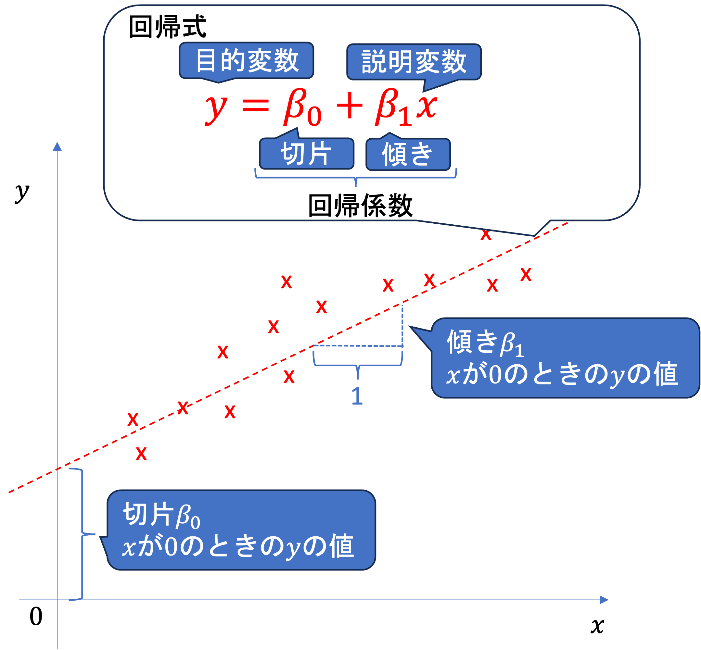
説明変数が一つの回帰式を求める分析を単回帰分析, 2 つ以上の説明変数を用いる場合を重回帰分析といいます.
y が x の線形関数である場合を 線形回帰 (Linear regression), それ以外のものを非線形回帰 (non-linear regression)といいます.
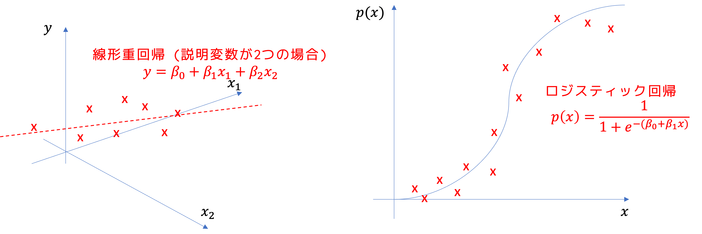
回帰分析は何を行っているのか (発展)
回帰分析が何を行っているのかについて, 単回帰で行っている最小二乗法を事例に確認していきましょう. 重回帰に関しては, 行列の計算 (線形代数) が必要になるので, 今回は扱いません. あくまで, 回帰というものがどのような意味であるかに関して簡単に説明します.
なお, 回帰分析の理論の詳細は統計学に関する別講義で扱っていますので, この講義ではあまり深く扱いません. 興味のある方は統計学の講義を受講してください.
母回帰方程式
体重 y を身長 x によって説明する回帰方程式として, y = \beta_0 + \beta_1 x を考えてみます. しかし, 実際の体重は身長以外の要素によってばらつきます. そのようなばらつきを考慮して, データの i 人目の体重, 身長をそれぞれ, Y_i,X_i として, 身長以外の要素によるばらつきを \epsilon_i とすると, 母集団において, 以下のような式が立てられます.
Y_i = \beta_0 + \beta_1 X_i + \epsilon_i ~(i=1,2,...,n)
これを母回帰方程式 (Population Regression Equation)と呼びます. また, \beta_0, \beta_1 を母 (偏) 回帰係数といい, これを推定, 検定することを回帰分析といいます.
誤差項, 撹乱項
母回帰方程式
Y_i = \beta_0 + \beta_1 X_i + \epsilon_i ~(i=1,2,...,n)
における \epsilon_i は X_i で説明できない誤差を表す確率変数であり, 誤差項, 撹乱項といいます.
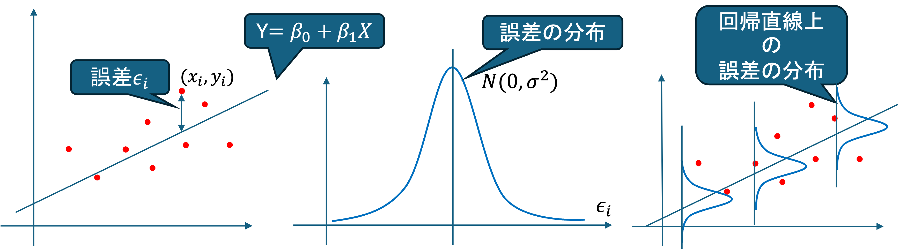
回帰分析において, 誤差項は以下の仮定をおいています.
- 期待値 0: E(\epsilon_i) = 0 ~ (i=1,2,...,n)
- 分散一定: V(\epsilon_i) = \sigma^2 ~ (i=1,2,...,n)
- 無相関: i \neq j \Rightarrow Cov(\epsilon_i, \epsilon_j) = 0
- 正規分布: \epsilon_i \sim N(0,\sigma^2)
これによって,
E(Y_i) = \beta_0 + \beta_1 X_i
が得られます.
最小二乗法
母回帰方程式
Y_i = \beta_0 + \beta_1 X_i + \epsilon_i ~(i=1,2,...,n) における母回帰係数 \beta_0, \beta_1 は観測できないので, 誤差項を最小化する母回帰係数を統計的推測することで求めます.
この誤差項を最小化する母回帰係数の推定方法を最小二乗法 (least squares method)といいます.
母回帰方程式を変形して,
\epsilon_i = Y_i - (\beta_0 + \beta_1 X_i)
が少ないほど, X_i による Y_i の説明力が上がります (モデルによってよく関係が説明できている).
なので, モデル全体で, \epsilon_i を最小化することを考えてみます.
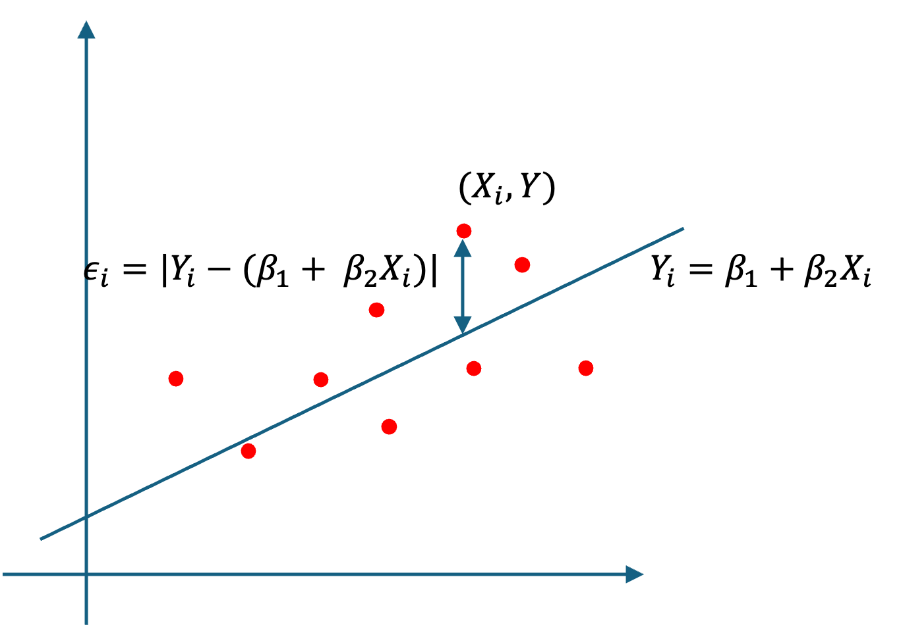
誤差の正負を打ち消すために, モデル全体の誤差項の二乗の和
\begin{align*} S & = \sum_{i=1}^{n} \epsilon_{i}^{2} \\ &= \sum_{i=1}^{n} \{Y_i - (\beta_0 + \beta_1 X_i)\}^2 \end{align*}
S を最小化する(最小二乗) 推定量 \hat{\beta_0},\hat{\beta_1} を求める問題として整理できます.
S の偏微分を 0 とおいて,
\frac{\partial S}{ \partial \beta_0} = -2 \sum (Y_i - \beta_0 - \beta_1 X_i) = 0 \\ \frac{\partial S}{ \partial \beta_1} = -2 \sum (Y_i - \beta_0 - \beta_1 X_i)X_i = 0 \\
これを解いて,
\hat{\beta_0} = \bar{Y} - \hat{\beta_1}\bar{X} \\ \hat{\beta_1} = \frac{\sum(X_i - \bar{X})(Y_i - \bar{Y})}{\sum(X_i - \bar{X})^2} が得られます.
回帰係数の検定
最小二乗推定量によって得られた方程式
Y = \hat{\beta_0} + \hat{\beta_1}X
を標本回帰方程式といいます.
求めた標本回帰方程式が, X と Y の関係を説明できているのかを考えます. X が Y を全く説明できていない場合, \epsilon_i だけで説明ができるため, \beta_1 \neq 0 と言えれば, 統計的に X が Y を説明できていると言えます.
そこで, 帰無仮説 H_0:\beta_1 = 0 として, 偏回帰係数に関する統計的仮説検定を実施します.
母数 \beta_1 に関する仮説検定を行うために, \beta_1 の確率分布を考えます.
誤差項 \epsilon_i \sim N(0,\sigma^2) として,
\hat{\beta_0} = \bar{Y} - \hat{\beta_1}\bar{X} \\ \hat{\beta_1} = \frac{\sum(X_i - \bar{X})(Y_i - \bar{Y})}{\sum(X_i - \bar{X})^2} であるから,
V(\hat{\beta_0}) = \frac{\sigma^2 \sum X_i^2}{n\sum(X_i - \bar{X})^2} \\ E(\hat{\beta_0}) = \beta_0 \\ V(\hat{\beta_1}) = \frac{\sigma^2 }{\sum(X_i - \bar{X})^2} \\ E(\hat{\beta_1}) = \beta_1 なので,
\hat{\beta_1} \sim N(\beta_1,\frac{\sigma^2}{\sum(X_i - \bar{X})^2})
となります.
この分布には未知の誤差項の母標準偏差 \sigma が含まれるので, \sigma を推定します.
標本回帰方程式 Y=\hat{\beta_0}+\hat{\beta_1}X によって求められる各 i の値 (回帰値)
\hat{Y_i} = \hat{\beta_0} + \hat{\beta_1}X_i
と実際に観測された実測値 Y_i との差を
\hat{e_i} = Y_i - \hat{Y_i} = Y_i - \hat{\beta_0} - \hat{\beta_1}X_i
を回帰残差 (residual) といい, X で説明されなかった部分を表します.
回帰残差を母回帰方程式 Y_i = \beta_0 + \beta_1 X_i + \epsilon_i における誤差項 \epsilon_i の推定値として利用します.
求める必要があるのは, 誤差項の分散の推定値としての分散
V(\hat{e_i}) = E(\hat{e_i^2}) - (E(\hat{e_i}))^2
であるが,
\frac{\partial S}{\partial \beta_0} = -2 \sum (Y_i - \beta_0 - \beta_1 X_i) = 0 なので,
\sum (Y_i - \beta_0 - \beta_1 X_i) = \sum \hat{e_i} = 0
となり,
\bar{e_i} = \frac{1}{n} \sum \hat{e_i} = 0
なので,
\begin{align*} V(\hat{e_i}) &= E(\hat{e}_i^2) \\ &= \frac{1}{n-2}\sum (\hat{e_i}^2 - \bar{e_i}^2) \\ &= \frac{\sum \hat{e_i}^2}{n-2} \end{align*}
となります.
これを誤差項の分散 \sigma^2 の推定値
S^2 = \frac{\sum \hat{e_i}^2}{n-2} として利用します.
なお, この平方根は回帰式がどの程度実測値に当てはまっているかを表す, 推定値の標準誤差 (standard error of estimates)と呼ばれます.
s.e. = \sqrt{S^2} = \sqrt{\frac{\sum \hat{e_i}^2}{n-2}}
これを誤差項の母標準偏差 \sigma の推定値として利用して, \hat{\beta_1} の標準誤差の推定値は,
V(\hat{\beta_1}) = \frac{\sigma^2 }{\sum(X_i - \bar{X})^2}
から,
s.e.(\hat{\beta_1}) = \frac{s.e.}{\sqrt{\sum(X_i - \bar{X})^2}}
となり, s.e.(\hat{\beta_1}) を用いて標準化した値は, t(n-2) に従うので,
t = \frac{\hat{\beta_1} - \beta_1}{s.e.(\hat{\beta_1})} \sim t(n-2)
あとは得られた推定量を用いて, 帰無仮説に関する t 検定を実施します.
単回帰分析
それでは, 実際に単回帰分析を実施してみます. 事例として, 以下の分析にどのような問題点があるのかを考えてみましょう.
今回に限らず毎度毎度のことだけど、日本「経済」新聞を名乗りながら、お粗末な統計リテラシーだからな。。。
— 糸石 浩司 (@itoishi) October 4, 2021
日経に限らず、本邦の大手紙は例外なく全てお粗末な統計リテラシー。
統計の基礎を勉強したい人はツッコミを入れると良いよ。ツッコミを入れるところだらけで勉強になるから。@IsayaShimizu https://t.co/cxMAFDPRfM
相関があることを言いたいなら散布図を描くべきでは？ あと，この16カ国はどうやって選んだのか？ https://t.co/ncWWtQ8A8L
— Haruhiko Okumura (@h_okumura) October 4, 2021
これらの POST は何を懸念しているのでしょうか.
元 POST では, 日本経済新聞が OECD Family Database のデータから作成したグラフを用いて男性の育児・家事時間の少なさが日本の少子化の原因であると主張しています.

この分析の問題点は主に以下の 2 つです.
元の POST の通り, この記事ではグラフを主張の根拠としていますが, 棒グラフと散布図を組み合わせたような独自のグラフを作成しており, これを持って何が主張できるのかが明確ではありません. 2 つの量的データの関係性を示す場合は散布図が適当です.
また, グラフが適当であったとしても, グラフはデータの概観の把握には役立ちますが, グラフのみから明確な主張ができるわけではない場合が多いです.
まずは, グラフに関して考えてみましょう. 実は, 内閣府もこのデータを利用して同様の主張をしています. 内閣府のグラフでは, 独自のグラフではなく, 散布図が作成されています.
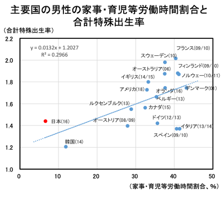
内閣府の資料では, 散布図に加えて回帰式 (y=0.0132x + 1.2027) と R^2 も求めています.
しかし, 先程説明した通り, 回帰分析とは回帰式に関する検定であり, 回帰式のみをもって, y (合計特殊出生率) に x (育児・家事労働時間割合) が影響を及ぼしているとは言えません.
では, 実際に回帰分析を実施してみるとどのような結果になるでしょうか?
データの準備
まずはデータを準備する必要があります. OECD Family Databaseから, SF2.1 Fertility rates 及び LMF2.5 Time used for work, care and daily household chores の Excel ファイルをダウンロードしました.
それぞれから fertility_rates.csv及び, time_used.csvを作成しました. 以下これらのデータをダウンロードして, 作業を進めてください.
可能であれば, 練習として以下のコードは見ないで, 元の内閣府の資料から何をする必要があるのか, 自分でどのように計算するかを考えて実行してみましょう.
まずはデータをそれぞれ読み込んでみましょう.
import pandas as pd
df_f = pd.read_csv('fertility_rates.csv')
df_t = pd.read_csv('time_used.csv')
print(df_f)
print(df_t)
"""
Country Fertility
0 Korea 0.92
1 Spain 1.23
2 Italy 1.27
3 Japan 1.36
4 Poland 1.42
5 Portugal 1.43
6 Lithuania 1.61
7 Luxembourg 1.34
8 Canada 1.47
9 Greece 1.34
10 Finland 1.35
11 Austria 1.46
12 Switzerland 1.48
13 United Kingdom 1.63
14 Costa Rica 1.63
15 Chile 1.55
16 Norway 1.53
17 Latvia 1.61
18 Germany 1.54
19 OECD average 1.60
20 Hungary 1.49
21 Belgium 1.60
22 Estonia 1.66
23 Netherlands 1.57
24 Slovak Republic 1.57
25 New Zealand 1.72
26 Slovenia 1.61
27 United States 1.71
28 Sweden 1.70
29 Australia 1.67
30 Türkiye 1.88
31 Colombia 1.77
32 Ireland 1.70
33 Denmark 1.70
34 France 1.83
35 Iceland 1.75
36 Mexico 1.92
37 Czech Republic 1.71
38 Israel 3.01
Country Paid Unpaid Care
0 Australia 20.3 10.5 2.2
1 Austria 22.5 9.4 1.5
2 Belgium 15.6 9.7 0.8
3 Canada 22.1 10.3 1.7
4 Estonia 21.0 11.5 1.8
5 Finland 15.4 11.2 1.0
6 France 14.5 9.7 1.0
7 Germany 17.4 9.8 1.4
8 Italy 14.5 8.2 1.2
9 Japan 26.3 4.7 0.5
10 Korea 26.5 3.0 0.8
11 Latvia 24.2 8.8 1.2
12 Mexico 30.0 4.4 3.5
13 New Zealand 19.9 11.3 1.1
14 Norway 18.6 11.7 1.6
15 Poland 21.7 6.2 1.5
16 Slovenia 18.9 11.4 1.6
17 Spain 14.8 8.9 2.0
18 Sweden 20.1 10.0 1.8
19 Turkey 20.2 2.6 3.5
20 United Kingdom 20.1 9.5 1.6
21 United States 20.4 10.2 1.6
"""確認してみると, 政府のデータは国ごとに異なる年代を使用しており, 年代も国の選択も OECD のデータベースで公開されているものとは異なるようです. 実際に, 日本経済新聞のデータとも値が異なっていることから, おそらく公開されていないデータを独自に集計しているようです. 今回は日本経済新聞で採用されている値から 2019 年の出生率及びデータベースで公開されている 1999-2013 年の家事・育児時間を採用します.
続いて, 政府のグラフに合わせて男性の労働時間, 家事及び育児の時間 (Paid, Unpaid, Care) に占める家事及び育児 (Unpaid, Care) の割合を計算します.
unpaid_and_care = df_t[["Unpaid", "Care"]].sum(axis=1)
total_work = df_t[["Paid", "Unpaid", "Care"]].sum(axis=1)
df_t["r"] = unpaid_and_care / total_work
print(df_t)
"""
Country Paid Unpaid Care r
0 Australia 20.3 10.5 2.2 0.384848
1 Austria 22.5 9.4 1.5 0.326347
2 Belgium 15.6 9.7 0.8 0.402299
3 Canada 22.1 10.3 1.7 0.351906
4 Estonia 21.0 11.5 1.8 0.387755
5 Finland 15.4 11.2 1.0 0.442029
6 France 14.5 9.7 1.0 0.424603
7 Germany 17.4 9.8 1.4 0.391608
8 Italy 14.5 8.2 1.2 0.393305
9 Japan 26.3 4.7 0.5 0.165079
10 Korea 26.5 3.0 0.8 0.125413
11 Latvia 24.2 8.8 1.2 0.292398
12 Mexico 30.0 4.4 3.5 0.208443
13 New Zealand 19.9 11.3 1.1 0.383901
14 Norway 18.6 11.7 1.6 0.416928
15 Poland 21.7 6.2 1.5 0.261905
16 Slovenia 18.9 11.4 1.6 0.407524
17 Spain 14.8 8.9 2.0 0.424125
18 Sweden 20.1 10.0 1.8 0.369906
19 Turkey 20.2 2.6 3.5 0.231939
20 United Kingdom 20.1 9.5 1.6 0.355769
21 United States 20.4 10.2 1.6 0.366460
"""出生率の表ではトルコを Türkiye, 時間配分の表では Turkey と表記しています. 国名をキーにして結合する前に, 出生率の表の表記を Turkey に揃えます.
df_f["Country"] = df_f["Country"].replace({"Türkiye": "Turkey"})
joined = df_f.merge(
df_t[["Country", "r"]],
on="Country",
how="outer",
validate="one_to_one",
indicator=True,
)両方の表の国名を残して結合し, 片方の表にしかない行を確認します. left_only は出生率の表にだけある行, right_only は時間配分の表にだけある行です. both の行から両方の値がある国を取り出します.
unmatched = joined.loc[joined["_merge"] != "both", ["Country", "_merge"]]
print(unmatched.to_string(index=False))
"""
Country _merge
Chile left_only
Colombia left_only
Costa Rica left_only
Czech Republic left_only
Denmark left_only
Greece left_only
Hungary left_only
Iceland left_only
Ireland left_only
Israel left_only
Lithuania left_only
Luxembourg left_only
Netherlands left_only
OECD average left_only
Portugal left_only
Slovak Republic left_only
Switzerland left_only
"""df_f = joined.loc[joined["_merge"] == "both", ["Country", "Fertility", "r"]]
df_f = df_f.set_index("Country").dropna()
print(df_f)
"""
Fertility r
Country
Australia 1.67 0.384848
Austria 1.46 0.326347
Belgium 1.60 0.402299
Canada 1.47 0.351906
Estonia 1.66 0.387755
Finland 1.35 0.442029
France 1.83 0.424603
Germany 1.54 0.391608
Italy 1.27 0.393305
Japan 1.36 0.165079
Korea 0.92 0.125413
Latvia 1.61 0.292398
Mexico 1.92 0.208443
New Zealand 1.72 0.383901
Norway 1.53 0.416928
Poland 1.42 0.261905
Slovenia 1.61 0.407524
Spain 1.23 0.424125
Sweden 1.70 0.369906
Turkey 1.88 0.231939
United Kingdom 1.63 0.355769
United States 1.71 0.366460
"""両方の表にデータがある国は 22 か国です. 元の投稿が指摘したとおり, 内閣府の計算にはメキシコが含まれていないので, この分析でもメキシコを除いた 21 か国を使います. 内閣府の図は 18 か国を対象としており, 今回の分析に含まれるトルコは載っていません. 一方, 内閣府の図に載るオランダやデンマークは, 今回の 21 か国には含まれません.
df_f = df_f.drop("Mexico")
print(df_f)
"""
Fertility r
Country
Australia 1.67 0.384848
Austria 1.46 0.326347
Belgium 1.60 0.402299
Canada 1.47 0.351906
Estonia 1.66 0.387755
Finland 1.35 0.442029
France 1.83 0.424603
Germany 1.54 0.391608
Italy 1.27 0.393305
Japan 1.36 0.165079
Korea 0.92 0.125413
Latvia 1.61 0.292398
New Zealand 1.72 0.383901
Norway 1.53 0.416928
Poland 1.42 0.261905
Slovenia 1.61 0.407524
Spain 1.23 0.424125
Sweden 1.70 0.369906
Turkey 1.88 0.231939
United Kingdom 1.63 0.355769
United States 1.71 0.366460
"""Fertility は合計特殊出生率で, 単位は女性 1 人あたりの子どもの数です. r は 0 から 1 の割合なので, 内閣府のグラフに合わせて 100 倍して % で表します.
df_f["r"] = df_f["r"] * 100
print(df_f)
"""
Fertility r
Country
Australia 1.67 38.484848
Austria 1.46 32.634731
Belgium 1.60 40.229885
Canada 1.47 35.190616
Estonia 1.66 38.775510
Finland 1.35 44.202899
France 1.83 42.460317
Germany 1.54 39.160839
Italy 1.27 39.330544
Japan 1.36 16.507937
Korea 0.92 12.541254
Latvia 1.61 29.239766
New Zealand 1.72 38.390093
Norway 1.53 41.692790
Poland 1.42 26.190476
Slovenia 1.61 40.752351
Spain 1.23 42.412451
Sweden 1.70 36.990596
Turkey 1.88 23.193916
United Kingdom 1.63 35.576923
United States 1.71 36.645963
"""散布図の作成
データが完成したので, 散布図を作成してみます. ラベルを表示するためにライブラリ adjustText を利用しています. この方法で作成する場合は uv add adjusttext してください.
import matplotlib.pyplot as plt
from adjustText import adjust_text
fig, ax = plt.subplots(figsize=(10, 6))
points = ax.scatter(df_f["r"], df_f["Fertility"])
ax.set(
xlim=(0, 50),
ylim=(0, 2),
xlabel="Unpaid and Care Work (%)",
ylabel="Fertility (children per woman)",
title="Fertility vs Unpaid and Care Work with Country Labels",
)
ax.grid()
texts = [
ax.text(row.r, row.Fertility, country, fontsize=9)
for country, row in df_f.iterrows()
]
adjust_text(
texts,
objects=points,
ax=ax,
expand=(1.15, 1.3),
iter_lim=300,
arrowprops={"arrowstyle": "-", "color": "gray", "lw": 0.5},
)
plt.show()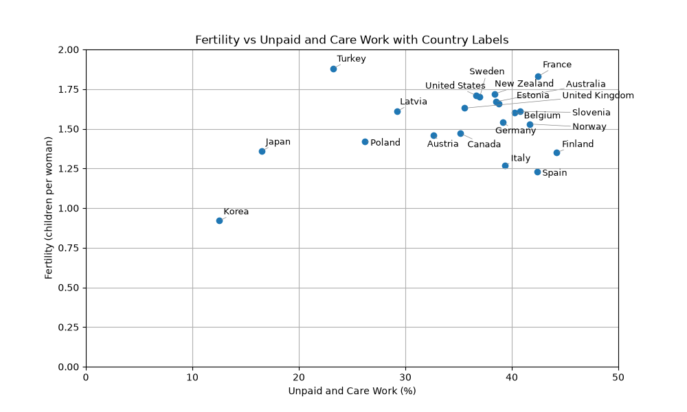
散布図では, トルコの家事・育児時間の割合は約 23% と低く, 合計特殊出生率は 1.88 で 21 か国の中で最も高い値です. トルコの点は, 割合が高い国ほど出生率が高いという傾向から外れています.
単回帰
つづいて, これらのデータを利用して単回帰分析を実施してみます. 回帰分析が可能なライブラリはいくつかありますが, ここでは statsmodels.api を利用してみます. uv add statsmodels をしておきましょう.
まずは, 切片 \beta_0 として定数 1 をデータに追加します. statsmodels では .add_constant() メソッドで追加できます.
import statsmodels.api as sm
# 説明変数 X と目的変数 y に分割
X = df_f[["r"]]
y = df_f["Fertility"]
# 切片に対応する定数項を追加
X = sm.add_constant(X)
print(X)
"""
const r
Country
Australia 1.0 38.484848
Austria 1.0 32.634731
Belgium 1.0 40.229885
Canada 1.0 35.190616
Estonia 1.0 38.775510
Finland 1.0 44.202899
France 1.0 42.460317
Germany 1.0 39.160839
Italy 1.0 39.330544
Japan 1.0 16.507937
Korea 1.0 12.541254
Latvia 1.0 29.239766
New Zealand 1.0 38.390093
Norway 1.0 41.692790
Poland 1.0 26.190476
Slovenia 1.0 40.752351
Spain 1.0 42.412451
Sweden 1.0 36.990596
Turkey 1.0 23.193916
United Kingdom 1.0 35.576923
United States 1.0 36.645963
"""回帰分析を実施するには OLS(y, X).fit() を利用します. OLS は Ordinary Least Squares の頭文字で最小二乗法を意味しています.
回帰分析の結果は .summary() メソッドで確認します.
result = sm.OLS(y, X).fit()
print(result.summary())
"""
OLS Regression Results
==============================================================================
Dep. Variable: Fertility R-squared: 0.130
Model: OLS Adj. R-squared: 0.084
Method: Least Squares F-statistic: 2.845
Date: Fri, 20 Nov 2026 Prob (F-statistic): 0.108
Time: 23:02:10 Log-Likelihood: 3.7860
No. Observations: 21 AIC: -3.572
Df Residuals: 19 BIC: -1.483
Df Model: 1
Covariance Type: nonrobust
==============================================================================
coef std err t P>|t| [0.025 0.975]
------------------------------------------------------------------------------
const 1.2082 0.197 6.119 0.000 0.795 1.621
r 0.0093 0.006 1.687 0.108 -0.002 0.021
==============================================================================
Omnibus: 0.832 Durbin-Watson: 2.136
Prob(Omnibus): 0.660 Jarque-Bera (JB): 0.236
Skew: -0.256 Prob(JB): 0.889
Kurtosis: 3.091 Cond. No. 153.
==============================================================================
Notes:
[1] Standard Errors assume that the covariance matrix of the errors is correctly specified.
"""様々な数値が出てきましたが, 単回帰において注目すべきは, (Adj.)R-squared, Prob (F-statistic), coef, P>|t|, [0.025 0.975] です.
それぞれ何を見ればよいのかを順に見ていきましょう.
回帰係数 (P 値, 区間推定値)
"""
coef std err t P>|t| [0.025 0.975]
------------------------------------------------------------------------------
const 1.2082 0.197 6.119 0.000 0.795 1.621
r 0.0093 0.006 1.687 0.108 -0.002 0.021
"""回帰係数から今回推定された標本回帰方程式 (y=\hat{\beta}_0+\hat{\beta}_1x) は
y=1.2082+0.0093x
となります.
この \hat{\beta}_0 と \hat{\beta}_1 に対して H_0: \beta_i =0,H_1: \beta_i \neq 0 で検定した結果が, P>|t| として示されています.
また, \hat{\beta}_0 と \hat{\beta}_1 の下側信頼限界が 0.025, 上側信頼限界が 0.975 として示されています.
2 つの値は基本的に同じことを違う方法で表しています.
それぞれの説明変数の P 値 (P>|t|) は, その説明変数に対する回帰係数が 0 である (影響がない) という仮説に対する仮説検定の P 値を表しています. また, [0.025 0.975] はそれぞれ 95% 信頼区間の下限と上限を表しています.
有意水準 5% の場合, P値 < 0.05 で有意となり, 信頼区間が 0 をまたぎません.
(ここで両側検定ですが, P値 < 0.025 とならないのは, 両側の外側累積確率を合算した値が算出されるためです.)
したがって, これらの値はいずれも同じ判断の基準となりますが, 最近は論文などには両方載せることが主流です.
(仮説検定や区間推定, P 値の意味などに関しては, 統計学入門で詳細を扱っています. 分からない人はそちらを履修しましょう.)
「P 値 < 0.05」 かつ 「下側信頼限界と上側信頼限界が 0 をまたいでいない」場合には, それぞれの回帰係数が有意となります.
切片は 5% 水準で有意です (表の P 値は丸めて 0.000 と表示され, 95% 信頼区間は 0.795 から 1.621 です). 傾きの P 値は 0.108 で, 95% 信頼区間 (-0.0022 から 0.0209) は 0 をまたぎます. したがって, 傾きは 5% 水準で有意ではありません.
あまり良くない回帰分析の方法として, 有意な回帰係数のみを分析対象として, 有意でない回帰係数を無視して分析している場合がしばしばあります. 基本的には, 式を構成するすべての回帰係数が有意である場合にはじめてその式は利用できます.
方針等は指導教員によって異なるのでそれぞれに従っていただくとして, この講義では基本的に一つでも有意でない回帰係数がある場合には, その回帰式は利用できないとみなしてください.
これは, 回帰式全体を構成する係数を一つずつ検定し, すべての係数が有意であることを求める立場の規則です. 係数が有意でない変数の扱いは, モデル選択で示すとおり, 回帰分析の目的 (説明, 予測, 探索) によって変わります.
式全体の評価指標 (R^2, F)
回帰係数の P 値, 区間推定値は回帰係数一つ一つに関する検定の結果でした. 回帰式全体の評価には, R^2 と 有意 F を使います.
"""
R-squared: 0.130
Adj. R-squared: 0.084
F-statistic: 2.845
Prob (F-statistic): 0.108
"""自由度調整済み決定係数 (Adj. R-squared)
決定係数 (R^2) は, モデルがどの程度当てはまっているかの基準です. 決定係数は説明変数の数が多いほど 1 に近づく特徴があるので, 説明変数が多い場合には説明変数の数を補正した 自由度調整済み決定係数 (\mathrm{Adj.}\ R^2) を用います.
自由度調整済み決定係数は 1 以下の値をとり, 負の値になることもあります. 目安として 0.5 \leq \mathrm{Adj.}\ R^2 であればある程度予測できていると考えられます. この目安は分野やデータの種類によって異なり, 新しいデータでの予測精度は回帰の評価の方法で測ります.
どんな散布図になっても回帰式自体は作成可能ですが, 以下の左右どちらの予測値の方が信頼できそうでしょうか.
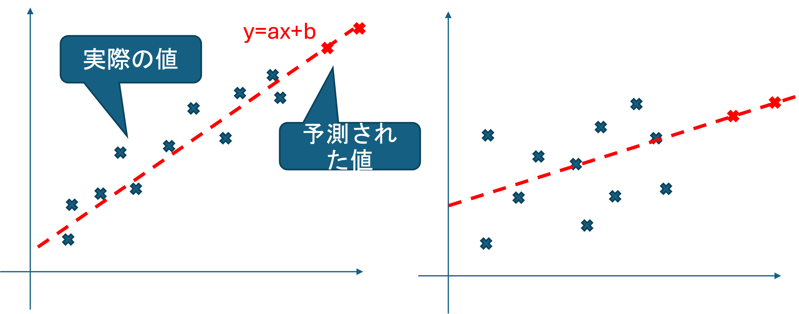
直感的には左の方が回帰直線が実際の値にフィットしており信頼できそうな気がしますね. R^2 はその感覚を数値化したものになります.
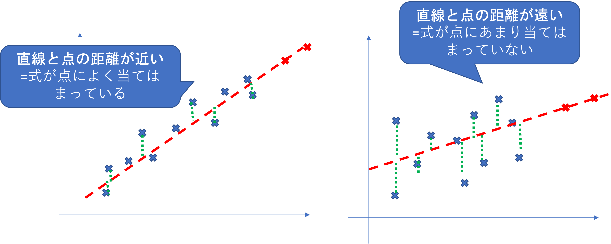
R^2 は, 式から作られた直線と, 実際のデータの点の距離の二乗和をもとに計算した値です. R^2 が 1 に近いほど, 式が点によく当てはまっていることを表します.
数値の解釈にも様々ありますが, この講義では
0.5 以上で予測に利用できる.
0.8 以上でかなり正確に予測ができる という解釈を採用します.
今回の自由度調整済み決定係数は 0.084 で, 回帰式の当てはまりは弱いと判断できます.
有意 F (Prob (F-statistic))
有意 F は求めた標本回帰式でどの程度データの散らばりを説明できるかを検定した結果です. どのような意味であるか見ていきましょう.
求めた回帰式と, データそれぞれの散らばりは, 全変動, 回帰変動, 残差変動によって表現可能です.
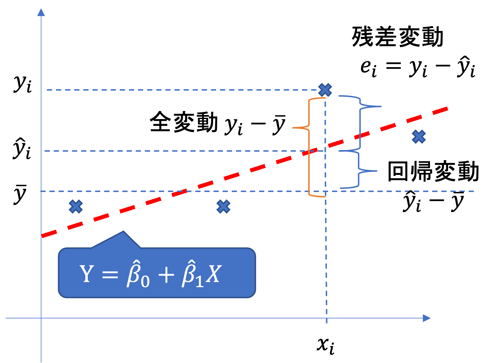
- 全変動: データと平均値の差の合計 (の二乗和)
データの散らばり具合
\sum_{i=1}^n (y_i-\bar{y})^2
- 回帰変動: 予測値とデータの平均値の差 (の二乗和)
データに対する回帰式の予測値の散らばり具合 \sum_{i=1}^n (\hat{y}_i-\bar{y})^2
- 残差変動: 予測値とデータの差 (の二乗和)
回帰式とデータのズレの散らばり具合
\sum_{i=1}^n (y_i-\hat{y}_i)^2
このとき
全変動 = 回帰変動+残差変動 すなわち,
\sum_{i=1}^n (y_i-\bar{y})^2 = \sum_{i=1}^n (\hat{y}_i-\bar{y})^2 + \sum_{i=1}^n (y_i-\hat{y}_i)^2
がなりたちます.
これは言い換えると,
データの散らばり=回帰式で説明できる散らばり+回帰式で説明できない散らばり
を表しています.
回帰変動の平均と, 残差変動の平均の比率を考えると, k を説明変数の数として,
\begin{align*} &\frac{回帰変動の平均}{残差変動の平均} &=\frac{\sum_{i=1}^n (\hat{y}_i-\bar{y})^2 /k}{\sum_{i=1}^n (y_i-\hat{y}_i)^2/(n-k-1)} \end{align*}
すなわち
\frac{回帰式で説明できる散らばり}{回帰式で説明できない散らばり}= 回帰式が説明できている割合
が成り立ちます.
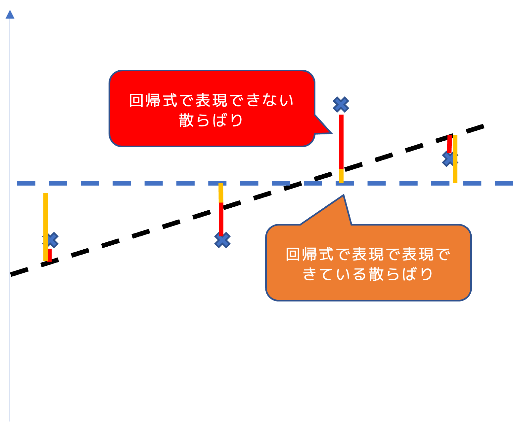
また, この説明の割合は F 分布に従うことが知られており,
F = \frac{\sum_{i=1}^n (\hat{y}_i-\bar{y})^2 /k}{\sum_{i=1}^n (y_i-\hat{y}_i)^2/(n-k-1)} \sim F(k,n-k-1)
H_0: \beta_1 = \beta_2 = \cdots = \beta_k = 0 (説明変数はどれも目的変数の散らばりを説明しない)
H_1: 少なくとも 1 つの \beta_j が 0 でない (回帰式が散らばりの一部を説明する)
H_0 が正しいとき, F は 1 の近くの値をとりやすく, 回帰式が説明できる散らばりが大きいほど F は大きくなります. この仮説で検定した結果の P 値が有意 F です.
したがって, 有意水準 5% のとき,
有意F < 0.05 であれば, 回帰式全体はデータを説明しているとみなすことができます.
F 検定の P 値は 0.108 です. 有意水準 5% では, 回帰式全体の F 検定も有意ではありません.
- 推定した回帰式は y=1.2082+0.0093x です.
- 回帰式では, 男性の仕事時間に対する家事・育児時間の割合が 1% (1 パーセントポイント) 高い国ほど, 出生率が 0.009 高いと推定されます. 傾きは 5% 水準で有意ではありません.
- 切片は有意で, 傾きと式全体の F 検定は有意ではありません. この講義の規則では, この回帰式は使えません.
内閣府のグラフには回帰式と R^2 が記載されていますが, 検定結果は載っていません. 今回の検定では, 男性の家事・育児時間の割合と出生率の間に関連があるとはいえません.
国名を揃えずに結合してメキシコを除くと, トルコが落ちて 20 か国になります. この 20 か国では傾きは 0.0134 で, P 値は約 0.016 となり, 5% 水準で有意です. 1 か国の扱いで結論が変わるため, 結合の後は片方の表にしかない行を確かめます.
自由度調整済み決定係数が低いことは, 国の間の出生率の違いのうち, この回帰式で表せる部分が小さいことを示します. 決定係数の値にかかわらず, 国の間の関連からは, 日本で男性の家事・育児時間を増やしたときに出生率がどう変わるかは分かりません. こうした介入の効果を調べる方法は第16章で扱います.
結果の可視化
最後に, このモデルを可視化してみましょう. まずは, 内閣府の資料と同じように散布図に回帰直線を可視化してみます.
OLS().fit() で得られた予測モデルは, .params[] で値を得ることができます. 回帰式を x の値と回帰係数から計算し, plt.plot() で直線を引いています.
import numpy as np
x_vals = np.linspace(df_f["r"].min(), df_f["r"].max(), 100)
y_vals = result.params["const"] + result.params["r"] * x_vals
fig, ax = plt.subplots(figsize=(10, 6))
points = ax.scatter(df_f["r"], df_f["Fertility"], color="blue", label="Data Points")
ax.plot(x_vals, y_vals, color="red", linestyle="--", label="Regression Line")
ax.set(
xlim=(0, 50),
ylim=(0, 2),
xlabel="Unpaid and Care Work (%)",
ylabel="Fertility (children per woman)",
title="Fertility vs Unpaid and Care Work with Regression Line",
)
ax.legend()
ax.grid()
texts = [
ax.text(row.r, row.Fertility, country, fontsize=9)
for country, row in df_f.iterrows()
]
adjust_text(
texts,
objects=points,
ax=ax,
expand=(1.15, 1.3),
iter_lim=300,
arrowprops={"arrowstyle": "-", "color": "gray", "lw": 0.5},
)
plt.show()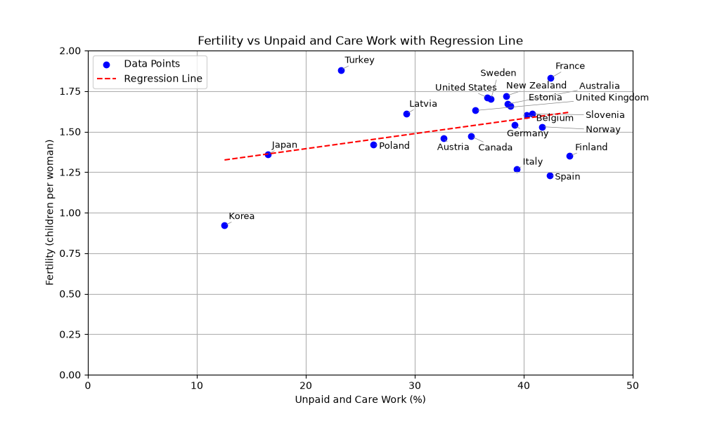
このようなグラフによって実測値に対する回帰直線の当てはまりを確認することもできますが, もう少しわかりやすい手法として, 縦軸に実測値 Y, 横軸に予測値 \hat{\beta}_0 + \sum \hat{\beta}_i X_i をプロットした散布図もよく用いられます.
先ほどとは異なり, .predict() メソッドで元データから計算された予測値を求めています. ここに x の等差級数を渡すことで先程のように回帰直線の値を得ることも可能です.
pred = result.predict(X)
fig, ax = plt.subplots(figsize=(8, 6))
ax.scatter(pred, y, alpha=0.7, edgecolors="k")
ax.set(xlabel="Predicted", ylabel="Actual", title="Actual vs. Predicted")
ax.plot([y.min(), y.max()], [y.min(), y.max()], color="red", linestyle="--")
ax.set_aspect("equal", adjustable="box")
ax.grid()
plt.show()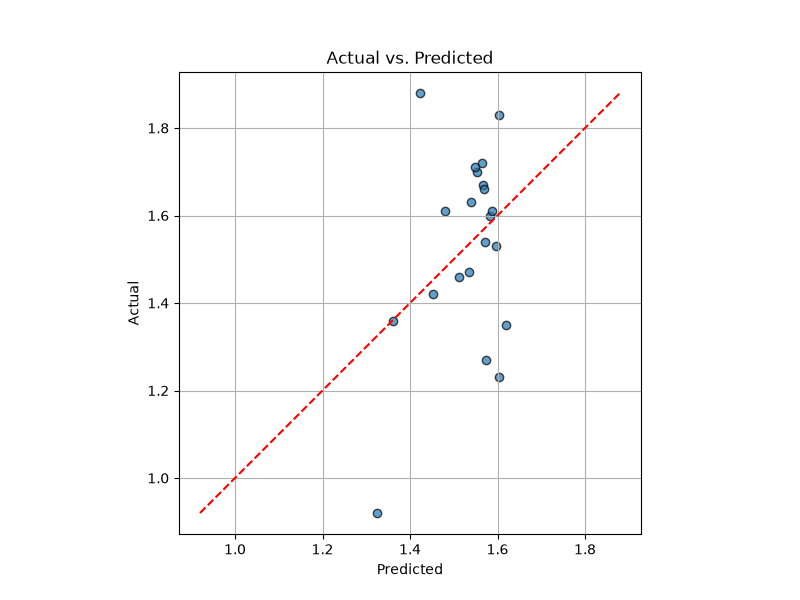
実測値と予測値が一致していれば, この散布図はグラフの 45 度線 (赤い点線) 上に一直線になります. 点は赤い点線から離れており, 当てはめに使った国の出生率にも予測値とのずれがあります.
実測値と予測値の カーネル密度プロット(KDE; Kernel Density Estimation Plot) を重ねたグラフもベイズモデルなどでよく利用される手法です.
実測値の分布と予測値の分布を見比べることで, 値全体でどの部分が過大/過少に推測されているかモデルの想定する分布がデータの分布と近いかが視覚化されます.
kde の描画には seaborn ライブラリが必要になるので uv add seaborn しておきましょう.
import seaborn as sns
fig, ax = plt.subplots(figsize=(16, 8))
sns.kdeplot(pred, label="Predicted", ax=ax)
sns.kdeplot(y, label="Actual", ax=ax)
ax.set(title="Actual/Predicted", xlabel="Fertility (children per woman)", ylabel="Density")
ax.legend()
plt.show()
plt.close(fig)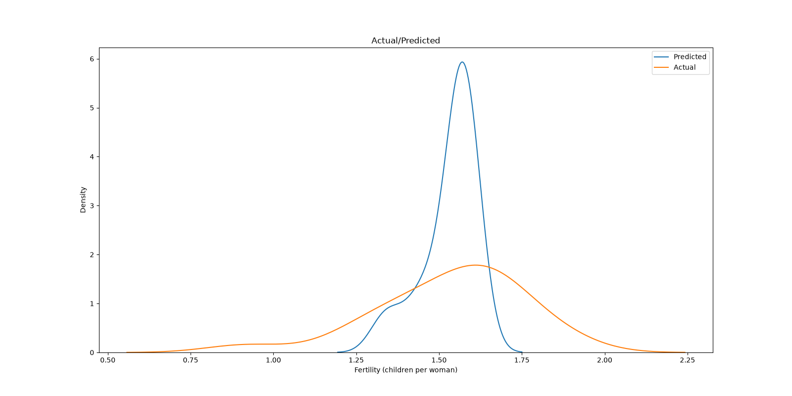
密度プロットでは, 予測値の分布が実測値の分布より狭く, 出生率の国ごとの散らばりを回帰式で十分に表せていません.
メキシコを加えた 22 か国での回帰分析は, 演習の Exercise DSP5-1で扱います.
重回帰分析
Y = \beta_0 + \beta_1 x_1 + \dots + \beta_n x_n
のように複数の説明変数, 回帰係数を利用して目的変数を説明する回帰分析を重回帰分析といいます. 基本的には, 単回帰と同じように分析することが可能ですが, いくつかの注意点があります.
注意点 1: モデル選択
前節で扱った単回帰分析では, 説明変数が 1 つしかなかったので, どの変数を使うかを選ぶ必要がありませんでした. 重回帰分析では, 候補の説明変数のうち, どれをモデルに入れるかを決める必要があります. どう決めるかは, 回帰分析を何のために行うか (説明, 予測, 探索) によって変わります. 目的ごとの決め方は, 本章のモデル選択の節で扱います.
P 値が 0.05 以上の変数を 1 つずつ除いていき, 全ての変数が有意になったモデルから結論を述べる方法や, 変数の出し入れを機械的に繰り返すステップワイズ法は, 探索の手順としては使えますが, その結果をそのまま結論にはできません. 理由はモデル選択の節で説明します.
注意点 2: データの正規化
重回帰分析では回帰係数毎に目的変数に対する説明変数の影響力が比較されます. その場合, 同一の基準で比較できるようにデータを正規化する必要があります.
これらの注意点に関して, 以下実例を通して概要を説明します. 手順が多く複雑ですが「回帰分析ができる」とはこの一連の手順を全て理解して, 実行できることを意味しています. 作業を再現しつつ, どのような処理を何故行っているのかを把握するようにしましょう.
データ準備
事例として架空の大学生の GPA に関するデータを利用します. multiple_regression.csvをダウンロードして利用してください.
各変数とデータの形式は以下のとおりです.
- 目的変数:
GPA(0-4) 量的変数 - 説明変数:
Scholarship(TRUE/FALSE) 質的変数;奨学生か否かStudy_Hours量的変数; 1 週間の平均勉強時間Sports_hours量的変数; 1 週間の平均運動時間Part_time_Work量的変数; 1 週間の平均バイト時間
| GPA | Scholarship | Study_Hours | Sports_hours | Part_time_Work |
|---|---|---|---|---|
| 3.191980667 | TRUE | 12.95386632 | 5.454919869 | 10.64263873 |
| 1.859812678 | FALSE | 10.68547312 | 7.614285509 | 13.35924324 |
| 1.980095331 | TRUE | 9.53740687 | 1.785033531 | 15.28753044 |
| 1.602786061 | TRUE | 8.795585218 | 5.369267717 | 16.45415926 |
| 0.559588183 | TRUE | 4.085912039 | 5.519765588 | 15.14785996 |
| 0.797498422 | FALSE | 7.120623166 | 6.563645744 | 15.05862363 |
| 1.578988552 | TRUE | 8.157444916 | 2.526098578 | 14.15564243 |
| 3.500751030 | TRUE | 14.2284889 | 2.359086774 | 10.15624819 |
| 2.201151409 | TRUE | 11.37447316 | 6.043883131 | 16.70622459 |
| 0 | FALSE | 2.947839379 | 5.593969346 | 19.04125979 |
| … | … | … | … | … |
このデータを利用して, GPA に影響する時間の使い方に関して分析します.
可視化 (散布図行列)
まずは散布図行列で組み合わせごとの特徴を把握します.
import numpy as np
import pandas as pd
import statsmodels.api as sm
import matplotlib.pyplot as plt
import matplotlib_fontja
import seaborn as sns
from sklearn.preprocessing import StandardScaler
df = pd.read_csv('multiple_regression.csv')
# 散布図行列の作成
pd.plotting.scatter_matrix(df[['GPA'
,'Study_Hours'
,'Sports_hours'
,'Part_time_Work']], range_padding=0.2)
plt.show()散布図行列において各交点には, 異なる変数の場合は散布図, 同じ変数の場合はヒストグラムが表示されています.
Scholarship は質的変数なので除外しています.
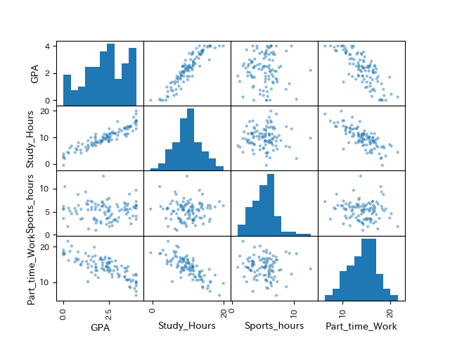
散布図行列を確認する場合は, 散布図とヒストグラムそれぞれを確認する必要があります. それぞれの見方は第3章で説明したとおりです.
散布図を見る際には, まず目的変数-説明変数の関係に注目します.
GPA に対して Study_Hours, Part_time_Work は相関がありそうに見えます.
続いて, 説明変数同士の関係にも注意が必要です. これは後に扱う多重共線性を考慮するためにも重要です.
説明変数同士も Study_Hours と, Part_time_Work には相関がありそうです.
次に, ヒストグラムを見ると Study_Hours, Sports_hours, Part_time_Work はいずれも単峰で左右対称な分布で, 外れ値もありません.
しかし, GPA は多峰な分布になっているので, 層別の必要性があります.
可視化 (ヒートマップ)
散布図では相関の有無は明確にならないので量的変数ごとに相関係数のヒートマップを作成し, より詳細に見てみます.
#ヒートマップで確認
sns.heatmap(df[['GPA'
,'Study_Hours'
,'Sports_hours'
,'Part_time_Work']].corr()
,vmax=1
,vmin=-1
,annot=True)
plt.show()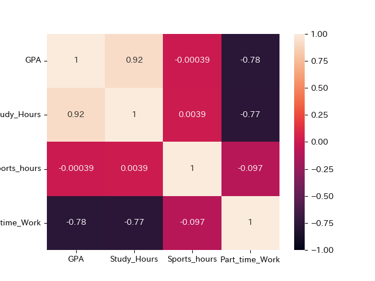
注目する点は, 基本的に散布図と同様です.
目的変数-説明変数
GPA-Study_Hoursにかなり強い正の相関GPA-Part_time_Workに強い負の相関
目的変数-説明変数に相関がある場合には, 回帰分析において有意になる可能性が高く, 説明変数として採用する可能性が高いです.
説明変数-説明変数
- Study_Hours-Part_time_Work にも強い負の相関
説明変数同士に相関が見られる場合は, 多重共線性を避けるために, 片方 (基本的には目的変数と相関係数が低い方) の変数を除外する必要があります.
多重共線性 (完全な多重共線性)
多重共線性とは, 説明変数間に強い相関関係があることで回帰係数の推定精度が落ちることを意味します. 多重共線性が見られる場合, 推定された回帰係数は標本によって大きく変わるので, 個々の係数の値を解釈できません. 係数を解釈して, 何が目的変数に影響するかを論じることが目的なら, 強い相関が見られる説明変数は, 目的変数に対する相関係数が高い方を残して, 片方を除外します. 予測が目的の場合は, 判断の基準が変わります (説明変数の組み合わせをテスト MSE で比べる).
説明変数 x_1,x_2,...,x_n において, 特定の変数 x_i が他の変数によって
x_i = \sum_{j \neq i} \alpha_j x_j
として, 少なくとも 1 つが 0 でない定数 \alpha_j によって表すことができる場合に, 「説明変数に完全な多重共線性が成り立っている」 といいます.
このとき, 最小二乗法では, Y = \beta_0 + \beta_1 x_1 + \dots + \beta_n x_n を解くことができなくなるため, 解が得られなくなります.
完全な多重共線性は基本的に, 特定の説明変数を変形して別の説明変数を追加した場合に生じるので, 特定の変数を変形した変数は入れるべきではありません.
例: x_1=\alpha_2 x_2 であるとすると, y=\beta_0+(\beta_1+\alpha_2 \beta_2)x_2 + \beta_3 x_3 + \dots \beta_n x_n
推定値が \hat{\beta}_{12} = \hat{\beta}_1 + \alpha_2 \hat{\beta}_2 であるとすると, \hat{\beta}_{12} となる \hat{\beta}_1 と \hat{\beta}_2 の組み合わせは無数にあるため, 具体的な値を特定できません.
多重共線性 (弱い多重共線性)
x_i \approx \sum_{j \neq i}\alpha_j x_j
で成り立つ (完全ではない/弱い) 多重共線性という概念もあります. これは, 説明変数間に完全相関以外の相関が成り立つ場合の多重共線性です.
変数間に相関がある場合
- サンプルサイズによって推定値が大きく変わる
- 標本によって推定値が大きく変わる
など, 推定値が不安定になります.
係数を解釈するときは, 多重共線性を避けるために, 変数間の相関が強い場合には片方を除外します. どちらの変数を残すかに関する基準には数理的なものもありますが,
検証したい仮説と関連の強いもの
目的変数に対する相関係数がより高い変数
を残すようにしましょう.
今回は, 回帰係数を解釈して GPA に影響する要因を調べることが目的なので, Study_Hours と相関の強い Part_time_Work を説明変数から除外します. 予測が目的なら, Part_time_Work を含めたモデルの方がテストデータでの誤差が小さくなります (説明変数の組み合わせをテスト MSE で比べる).
相関の強い説明変数の片方を除外すると, 残した変数の係数の意味が変わります. 除外した変数が, 残した変数をそろえた後も目的変数と関係しているとき, 残した変数の係数は, 除外した変数の分の関係も含んだ値になるためです. このデータで, 元の単位のまま Scholarship と Study_Hours を入れて推定すると, Part_time_Work を加えたときの Study_Hours の係数は 0.220 (95% 信頼区間 0.203〜0.237), 除外したときは 0.273 (0.259〜0.288) です. どちらの係数を推定すべきかは, 相関の強さではなく, 変数どうしの因果の関係 (どちらがどちらに影響するか) と, どの効果を知りたいかで決まります (Cinelli et al., 2024). その考え方は第16章で扱います. 本章の以下の例は, この節の判断どおり Part_time_Work を除いたモデルで進めます.
可視化 (層別とペアプロット)
散布図/ヒートマップを参考に多重共線性に関する示唆を得ることができました.
続いて, ヒストグラムについてもう少し深掘りしてみましょう. ヒストグラムが多峰になっていたので, 試しに唯一の質的変数である, Scholarship でデータを層別した散布図行列を作成してみます.
sns.pairplot(df[['GPA'
,'Study_Hours'
,'Sports_hours'
,'Part_time_Work'
,'Scholarship']]
, diag_kind="hist"
, hue="Scholarship"
, palette="Set2"
, diag_kws=dict(bins=8))
plt.suptitle("Scatterplot Matrix with Scholarship", y=1.02)
plt.show()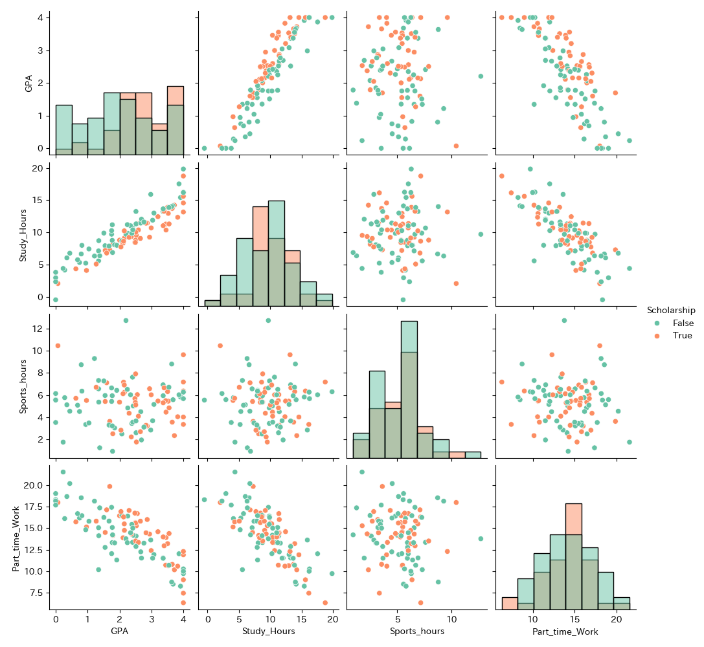
奨学金をもらっている (True) の分布と, もらっていない (False) 分布で GPA が異なることが分かります.
つまり, 奨学生とそれ以外の影響を分析に追加するべきであることが分かります.
それ以外の変数はそれほど違いがありません.
奨学金あり/なしいずれも単峰ではありませんが, 今回はこれ以上分割する情報がないので, この 2 つの層で分析を進めます.
可視化 (層別とジョイントプロット)
GPA に対して, Study_Hours の影響が最も強そうなので, この 2 変数に注目してもう少し詳細に見てみましょう.
この 2 変数のジョイントプロットを作成してみます.
#joinplotで男女別に密度プロットを表示
fig = sns.jointplot(data = df
,x ="Study_Hours"
,y ="GPA"
,hue='Scholarship'
,joint_kws = dict(alpha=0.5))
plt.show()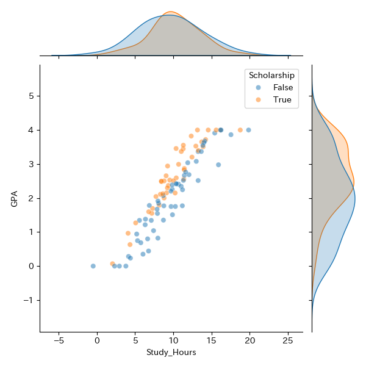
基本的には勉強時間が上がるほど, GPA が高くなるという傾向が見られます.
また, 奨学生の方が非奨学生よりも全体的に GPA が高いことが散布図, カーネル密度プロットの双方から分かります.
しかし, Scholarship は質的変数であり, そのままではこの影響を回帰分析に組み込むことができません. どのようにしたら良いのでしょうか?
ダミー変数化 (数量化 1 類)
説明変数に質的データを含める重回帰分析を数量化 1 類 (Quantification Method Type I)といいます.
基本的に回帰分析における質的データは 0/1 からなる擬似的な量的変数であるダミー変数に変換して処理しますがこのような数への変換を総じて数量化といいます.
数量化にはこの他にも, 目的変数と説明変数がともに質的データの場合の数量化 2 類 (Quantification Method Type Ⅱ), 説明変数に量的データが混ざっている場合の拡張型数量化 2 類などがあり, 数量化 3,4,5,6 類なども存在します.
数量化 2 類に関してはロジスティック回帰, 数量化 3 類に関しては主成分分析が同様の目的で利用されるため, これらに関しては本資料では扱いません.
例えば, 以下のような身長と体重, 性別, 国籍からなるデータがあった場合, 新たに性別, 国籍の種別の列を設けて当てはまる行に 1, 当てはまらない行に 0 を入力する変換を行います.
- 変換前のデータ
| id | 体重 | 身長 | 性別 | 国籍 |
|---|---|---|---|---|
| 1 | 65 | 170 | 男 | 日本 |
| 2 | 58 | 174 | 女 | 米国 |
| 3 | 78 | 189 | 男 | オランダ |
| … | … | … | … | … |
- ダミー変数に変換したデータ
| id | 体重 | 身長 | 性別 男 | 日本 | 米国 | オランダ |
|---|---|---|---|---|---|---|
| 1 | 65 | 170 | 1 | 1 | 0 | 0 |
| 2 | 58 | 174 | 0 | 0 | 1 | 0 |
| 3 | 78 | 189 | 1 | 0 | 0 | 1 |
| … | … | … | … | … | … | … |
それでは, Scholarship をダミー変数化してみましょう. pandas では get_dummies 関数で簡単に実装できます.
# カテゴリカルデータのダミー変数化
# get_dummies関数を使う(dtype='int'で0/1の数値に変換)
df = pd.get_dummies(df,columns=['Scholarship'],dtype='int')
print(df)
"""
Unnamed: 0 GPA Study_Hours Sports_hours Part_time_Work Scholarship_False Scholarship_True
0 0 3.191981 12.953866 5.454920 10.642639 0 1
1 1 1.859813 10.685473 7.614286 13.359243 1 0
2 2 1.980095 9.537407 1.785034 15.287530 0 1
3 3 1.602786 8.795585 5.369268 16.454159 0 1
4 4 0.559588 4.085912 5.519766 15.147860 0 1
.. ... ... ... ... ... ... ...
95 95 3.558740 16.199738 6.267838 9.986043 1 0
96 96 0.956727 6.866987 0.949715 14.228814 1 0
97 97 1.126911 8.711754 5.372909 14.130176 1 0
98 98 2.355837 13.254069 3.676427 12.873422 1 0
99 99 0.780918 5.076543 6.704867 15.826625 0 1
"""正規化・標準化
重回帰分析では, 単回帰分析と異なり複数の変数の影響を比較します. その際に例えば, 値 1 の単位が mm, 値 2 の単位が m, 値 3 の単位が % など異なると正確に比較できません. そこで, データの単位などを揃える操作として正規化か標準化を行う必要があります.
- 正規化
最大値を 1, 最小値を 0 にそろえること.
x{\prime}_i = \frac{x_i - \min(X)}{\max(X) - \min(X)}
- 標準化
標準得点を求めて, 平均 0 分散 1 に揃える.
z_i = \frac{x_i - \bar{x}}{\sigma}
正規化/標準化された値によって求められた回帰係数は目的変数に対するそれぞれの説明変数の影響力を表します. ただし, 単位が元のデータとは異なるので注意が必要です.
基本的には標準化が推奨されますが明確な使い分けはなく, 正規化のほうが直感的に影響力が理解されやすいため簡便な分析では利用される場合があります.
標準化は元のデータが正規分布であることを前提に実施されます. 分布が明らかに異なる場合は正規化が採用される場合もありますが, 重回帰分析自体がそのような仮定のもとで実施されているため, 今回の分析では暗黙に正規分布を仮定しています.
以下の分析では標準化を実施してみます. 標準化は, 自分で標準偏差などを求めて計算することも可能ですが sklearn.preprocessing の StandardScaler を利用すると簡単に実装できます.
#標準化
from sklearn.preprocessing import StandardScaler
scaler = StandardScaler()
df[['Scholarship_True'
,'Study_Hours'
,'Part_time_Work'
,'Sports_hours']] = scaler.fit_transform(df[['Scholarship_True'
,'Study_Hours'
,'Part_time_Work'
,'Sports_hours']])なお正規化も同様に MinMaxScaler を利用することができます. 以下の分析では標準化したデータを使うので, 正規化した値は別の DataFrame (df_minmax) に入れ, df は書き換えません.
#正規化
from sklearn.preprocessing import MinMaxScaler
# 正規化（0〜1に変換）. 以下の分析で使う df は標準化したまま残す
columns = ['Scholarship_True', 'Study_Hours', 'Part_time_Work', 'Sports_hours']
df_minmax = df.copy()
df_minmax[columns] = MinMaxScaler().fit_transform(df[columns])モデル選択
候補の説明変数のうちどれをモデルに入れるかを決めることを変数選択, 変数の組み合わせに限らず候補のモデルの中から 1 つを選ぶことをモデル選択といいます. どの変数を入れるべきかは, 回帰分析を何のために行うかによって変わります. この講義では, 回帰分析の目的を次の 3 つに分けます.
- 説明: 特定の説明変数と目的変数の関係の大きさを推定します. 「勉強時間が 1 時間長い学生は, GPA がどれだけ高いか」のように, 回帰係数の値そのものが結果になります.
- 予測: 新しいデータの目的変数の値を, できるだけ正確に当てます. 「この学生の GPA はいくつか」のように, 予測値と, その誤差の小ささが結果になります.
- 探索: 次に確かめる仮説を見つけます. 多くの候補の中から, 目的変数と関係がありそうな変数を拾い出すことが結果になります.
説明と予測では, 良いモデルの基準が違います. 説明では係数が正しく推定できていることが求められ, 予測では新しいデータでの誤差が小さいことが求められます. 予測の誤差が最も小さいモデルが, 係数の解釈に最も適したモデルであるとは限りません (Shmueli, 2010).
目的を区別しないまま, 1 つのデータで変数を選び, 同じデータで検定した結果を結論にする方法には問題があります. 例えば, 次の手順はよく使われています.
- 候補の変数をすべて入れて回帰分析を行う.
- 定数項を除いた変数のうち, P 値が 0.05 以上で最も大きいものを除いて推定し直す.
- 残ったすべての変数の P 値が 0.05 未満になるまで 2 を繰り返し, 残ったモデルの係数から結論を述べる.
この手順で残った変数の P 値は, 小さく出やすくなります. P 値は, 分析の前に決めておいた 1 つのモデルを検定することを前提に計算されていて, データを見てモデルを選んだ手順を計算に含めていません. 手順 2 は, 手元のデータでたまたま目的変数との関係が強く出た変数を残し, 弱く出た変数を除きます. 残った変数の P 値は, そのように選ばれたことを考慮せずに同じデータで計算されるので, 目的変数と本当は関係のない変数でも小さくなりやすくなります. 目的変数と無関係な変数から緩い基準で選んで推定し直すだけで, 式全体の F 検定が有意なモデルが得られることが, シミュレーションで示されています (Freedman, 1983). ステップワイズ法で選んだモデルの P 値が小さく出ることは, 回帰の専門書でも問題点として挙げられています (Harrell, 2015). この講義の手順でも, 無関係な 50 個の変数から選ぶと, ほとんどの回で 1 つ以上の変数が「有意」として残ります. その様子は目的変数と無関係な変数を P 値で選ぶシミュレーション (発展)で確かめます.
この講義での目的ごとの進め方
この講義では, 分析を始める前に目的を決め, 目的に応じて変数の選び方と結果の報告の仕方を変えます.
- 説明が目的のとき: 入れる変数を, データを見る前に, 仮説と既存の知識から決めます. 推定した後に P 値を見て変数を外すことはせず, 注目する係数を信頼区間とともに報告します. 有意でなかった係数も, 関係の大きさがどの範囲にあるかを信頼区間で示す結果として報告します.
- 予測が目的のとき: 回帰式を求めるのに使っていないデータでの予測の誤差で比べて選びます. AIC もこの目的で使う基準です.
- 探索が目的のとき: P 値や AIC を手がかりに変数を選んでかまいません. ただし, 選んだモデルの P 値は結論にせず, 仮説として扱います. この講義では, 探索で選んだモデルを別のデータで確かめるところまで行うことを推奨します.
上の 1〜3 の手順は, 探索の手順としては使えますが, その結果だけでは結論にできません. 探索で選んだモデルの結果の扱い方には, 次の 3 つがあります.
- 新しいデータを集めて, 選んだモデルを推定し直す.
- 分析の前にデータを探索用と確認用に分けておき, 探索用のデータで選んだモデルを確認用のデータで推定し直す. 確認用のデータでは, 変数を選び直したり, 判定の基準を変えたりしません. 同じ人を何年も追跡したデータ (パネルデータ) では, 同じ人が両方に入らないように人の単位で分けます.
- 変数を選んだことを考慮して, P 値や信頼区間を補正する (選択後の推論) (Efron & Hastie, 2016). ただし, 選んだ後の推定値の分布は複雑で, 正しく補正するのは一般には難しいことが知られています (Leeb & Pötscher, 2005).
この講義では, 3 つの目的の区別と, 2 つ目の方法 (データを分けて確かめる方法) を扱います. 選択後の推論の方法と, 係数を因果効果として読むための変数の選び方 (第16章で扱います) は, さらに学ぶための文献で紹介します. この問題が分野ごとにどう扱われてきたかは, モデル選択の考え方の分野ごとの経緯 (発展)にまとめています.
説明が目的の場合
本章の GPA のデータでは, 時間の使い方と GPA の関係を調べることを目的にしています. 説明が目的なら, 入れる変数はデータを見る前に決めておきます. ここでは, 奨学生かどうか, 勉強時間, 運動時間の 3 つを説明変数に入れると決めたものとします (Part_time_Work は多重共線性 (弱い多重共線性)の節の判断で除いています). Scholarship のダミー変数 Scholarship_True を含め, 標準化した説明変数で重回帰分析を行います.
# 説明変数(X)と目的変数(y)に分割
X = df[['Scholarship_True', 'Study_Hours','Sports_hours']]
y = df['GPA']
# 切片(定数項)を追加
X = sm.add_constant(X)
# 回帰モデルを作成・フィット
result = sm.OLS(y, X).fit()
# 結果を表示
print(result.summary())
"""
OLS Regression Results
==============================================================================
Dep. Variable: GPA R-squared: 0.944
Model: OLS Adj. R-squared: 0.943
Method: Least Squares F-statistic: 543.5
Date: Fri, 24 Oct 2025 Prob (F-statistic): 4.46e-60
Time: 12:48:46 Log-Likelihood: -7.4041
No. Observations: 100 AIC: 22.81
Df Residuals: 96 BIC: 33.23
Df Model: 3
Covariance Type: nonrobust
====================================================================================
coef std err t P>|t| [0.025 0.975]
------------------------------------------------------------------------------------
const 1.8366 0.027 69.060 0.000 1.784 1.889
Scholarship_True 0.2556 0.027 9.574 0.000 0.203 0.309
Study_Hours 1.0213 0.027 38.262 0.000 0.968 1.074
Sports_hours 0.0152 0.027 0.570 0.570 -0.038 0.068
==============================================================================
Omnibus: 22.718 Durbin-Watson: 2.026
Prob(Omnibus): 0.000 Jarque-Bera (JB): 62.615
Skew: 0.732 Prob(JB): 2.53e-14
Kurtosis: 6.590 Cond. No. 1.09
==============================================================================
"""式全体の評価は単回帰分析と同様に読みます. 自由度調整済み決定係数は 0.943 で, 有意 F (Prob (F-statistic)) は 4.46e-60 です.
説明変数は標準化してあり, GPA は元の単位のままなので, 各係数は「他の 2 つの説明変数が同じ学生どうしで比べたとき, その説明変数が 1 標準偏差違うと, GPA がいくつ違うか」を表します. 「Study_Hours が 1 時間伸びると GPA が 1.02 増える」とは読めません. 説明が目的なので, 3 つの係数を信頼区間とともに報告します.
Study_Hours: 1.021 (95% 信頼区間 0.968〜1.074). 勉強時間が 1 標準偏差 (約 3.7 時間) 長い学生は, GPA が約 1.0 高い.Scholarship_True: 0.256 (0.203〜0.309). ダミー変数も標準化しているので, 0.256 は 1 標準偏差 (約 0.50) あたりの差です. 奨学生と奨学生でない学生の差に直すと約 0.51 で, 奨学生の方が GPA が高い.Sports_hours: 0.015 (-0.038〜0.068). 信頼区間が 0 を含むので有意ではありません. 運動時間が 1 標準偏差 (約 2.0 時間) 違っても, GPA の差は 0.07 未満と見積もられます.
Sports_hours は有意ではありませんが, モデルから外しません. 有意でないことだけからは, 関係が小さいとはいえません. この例では, 信頼区間から運動時間 1 標準偏差あたりの GPA の差は 0.07 未満と見積もられ, 勉強時間 1 標準偏差あたりの差 (約 1.0) と比べて小さい範囲に収まっています. 説明が目的のときは, この範囲を結果として報告します. P 値を見てから Sports_hours を外して推定し直すと, モデル選択で述べた手順と同じく, 残った係数の P 値と信頼区間が, 選んだことを考慮しない値になります.
「勉強時間を増やせば GPA が上がる」という因果の主張をするには, 入れる変数を因果の関係についての仮定から決める必要があり, その方法は第16章で扱います.
予測が目的の場合
予測が目的なら, 変数の組み合わせは, 回帰式を求めるのに使わなかった学生について, GPA の予測の誤差を比べて決めます. その方法は, この後の回帰の評価と説明変数の組み合わせをテスト MSE で比べる (発展)で扱います. データを分けずに比べるときは, AIC (赤池情報量規準, Akaike’s Information Criterion) がよく使われます. AIC は, モデルの対数尤度 \log L と, 推定するパラメータの数 k から計算します.
\mathrm{AIC} = -2 \log L + 2k
尤度は, 手元のデータがそのモデルからどれだけ得られやすいかを表す量です (GPA のような連続な値では, 確率の代わりに確率密度を使います). 対数尤度は尤度の対数で, データへの当てはまりが良いほど大きくなります. AIC の式の \log L には, 係数などのパラメータを最もよく当てはまる値にしたときの対数尤度を使います (尤度は第13章の尤度 (Likelihood)で説明しています). AIC は, 同じ仕組みで生まれる新しいデータに対するモデルの予測の良さを, 手元のデータから見積もる量として導かれています (小西 & 北川, 2004). 当てはまりが良いほど第 1 項は小さくなり, パラメータが多いほど第 2 項は大きくなります. 値が小さいモデルほど, 新しいデータへの予測が良いと見積もられます.
AIC と並んで出力される BIC (ベイズ情報量規準, Bayesian Information Criterion) は, 候補のモデルのうちどれがデータを生んだ可能性が高いかを比べる考え方 (ベイズ統計) から導かれた, AIC とは別の規準です. 式は, AIC の 2k の代わりに k \log n (n はデータの数) を足したものです. パラメータ 1 つあたりに足す値が \log n なので, データが 8 個以上あれば (\log 8 \approx 2.08), BIC は AIC より, 変数の多いモデルの値を大きくします.
summary() の出力にも AIC と BIC が表示されますが, 2 つのモデルの値を並べて比べます.
models = [
['Scholarship_True', 'Study_Hours', 'Sports_hours'],
['Scholarship_True', 'Study_Hours'],
]
for cols in models:
fit = sm.OLS(df['GPA'], sm.add_constant(df[cols])).fit()
print(' + '.join(cols), f'AIC: {fit.aic:.2f} BIC: {fit.bic:.2f}')
"""
Scholarship_True + Study_Hours + Sports_hours AIC: 22.81 BIC: 33.23
Scholarship_True + Study_Hours AIC: 21.15 BIC: 28.96
"""AIC も BIC も, Sports_hours を入れないモデルの方が小さくなります. ただし AIC の差は 1.66 です. AIC が最も小さいモデルとの差が 2 程度より小さいモデルは, 最も小さいモデルと同じ程度に支持されると考えるのが目安です (Burnham & Anderson, 2002). AIC で比べると, Sports_hours を入れたモデルも候補から外れません.
AIC が小さいモデルを選ぶことと, P 値が 0.05 未満の変数だけを残すことは, 別の基準です. あるモデルに変数を 1 つ (係数を 1 つ) 加えたモデルと比べるとき, AIC が下がるのは, 対数尤度が 1 より大きく増えるときです. これは, 加えた変数の係数を尤度比検定 (大標本での近似を使う検定) で調べたときの P 値が, およそ 0.157 未満であることと同じです (Heinze et al., 2018). summary() の P>|t| は t 検定の P 値なので, 値は少し違います. そのため, AIC で選んだモデルに P 値が 0.05 以上の変数が残ることがあり, 予測が目的ならそれで問題ありません. また, AIC で選んだ場合も, 選んだ後に同じデータで計算した P 値は小さく出やすくなります. この点は, P 値で選んだ場合と同じです.
探索が目的の場合
探索が目的なら, モデル選択の 1〜3 の手順で変数を選んでかまいません. ただし, 分析を始める前にデータを探索用と確認用に分けておき, 探索用のデータで選んだモデルを, 確認用のデータで推定し直します. 確認用のデータは変数の選択に使っていないので, そこで計算した P 値と信頼区間は, 選んだことの影響を受けません.
# データを探索用と確認用に半分ずつ分ける
explore = df.sample(frac=0.5, random_state=0)
confirm = df.drop(explore.index)
# 探索用のデータで, P 値が 0.05 以上の変数のうち最も大きいものを 1 つずつ除く
selected = ['Scholarship_True', 'Study_Hours', 'Sports_hours']
while selected:
fit = sm.OLS(explore['GPA'], sm.add_constant(explore[selected])).fit()
pvalues = fit.pvalues.drop('const')
print(pvalues.round(3).to_dict())
if pvalues.max() < 0.05:
break
selected.remove(pvalues.idxmax())
print('探索用のデータで残った変数:', selected)
# 確認用のデータで, 残った変数のモデルを推定し直す
check = sm.OLS(confirm['GPA'], sm.add_constant(confirm[selected])).fit()
print(check.summary().tables[1])
"""
{'Scholarship_True': 0.0, 'Study_Hours': 0.0, 'Sports_hours': 0.272}
{'Scholarship_True': 0.0, 'Study_Hours': 0.0}
探索用のデータで残った変数: ['Scholarship_True', 'Study_Hours']
====================================================================================
coef std err t P>|t| [0.025 0.975]
------------------------------------------------------------------------------------
const 1.8598 0.041 45.070 0.000 1.777 1.943
Scholarship_True 0.2542 0.042 6.045 0.000 0.170 0.339
Study_Hours 0.9750 0.041 23.984 0.000 0.893 1.057
====================================================================================
"""df.sample(frac=0.5, random_state=0) は 100 人から半分の 50 人をランダムに選び, df.drop(explore.index) は選ばれなかった残りの 50 人を取り出します. fit.pvalues は各係数の P 値で, 定数項 (const) を除いた中で最も大きいものを idxmax() で見つけて, selected から除きます. summary().tables[1] は, summary() の出力のうち係数の表だけを取り出します.
探索用のデータでは, Sports_hours の P 値が 0.272 で除かれ, Scholarship_True と Study_Hours が残りました. 変数を除く手順に使っていない確認用の 50 人で推定し直しても, 2 つの係数の 95% 信頼区間 (0.170〜0.339 と 0.893〜1.057) はどちらも 0 を含みませんでした.
ただし, この例では, 候補の 3 変数を決めるまでに, この章の散布図行列や相関係数で 100 人全員のデータを見ています. 確認用の 50 人を使っていないのは, P 値で変数を除く手順だけです. 実際の分析では, 散布図や相関係数を見る前にデータを分けておき, 候補の変数も探索用のデータだけで決めます.
データを分けると, 1 つの推定に使える人数が減り, 信頼区間は一般に広くなります. 同じ 2 変数のモデルで比べると, Study_Hours の信頼区間の幅は, 100 人全員では 0.11, 確認用の 50 人では 0.16 でした.
この後の結果の可視化と回帰の評価では, この 2 つの変数のモデルを使います. 可視化のために, 100 人全員のデータで推定し直しておきます.
# この 2 つの変数のモデルを, 100 人全員のデータで推定し直す
X = sm.add_constant(df[selected])
y = df['GPA']
result = sm.OLS(y, X).fit()結果の可視化
回帰分析の結果を画像でも確認してみます. 探索が目的の場合の最後に 100 人全員のデータで推定した, Scholarship_True と Study_Hours のモデル (result) を使います. 以下の図は, 推定に使った 100 人への当てはまりを示します.
最も単純な回帰の結果を表すグラフは, 縦軸に実測値 Y, 横軸に予測値をプロットした散布図です.
pred = result.predict(X)
plt.figure(figsize=(8, 6))
plt.scatter(pred, y, alpha=0.7, edgecolors="k")
plt.xlabel("Predicted")
plt.ylabel("Actual")
plt.title("Actual vs. Predicted")
plt.plot([y.min(), y.max()], [y.min(), y.max()], color="red", linestyle="--") # 完全一致のライン
plt.grid()
plt.show()実測値と予測値が一致していれば, この散布図はグラフの 45 度線 (赤い点線) 上に一直線になります. ほとんどの点が 45 度線付近に集まっているので, 推定に使ったデータに対する回帰式の当てはまりは良好です.
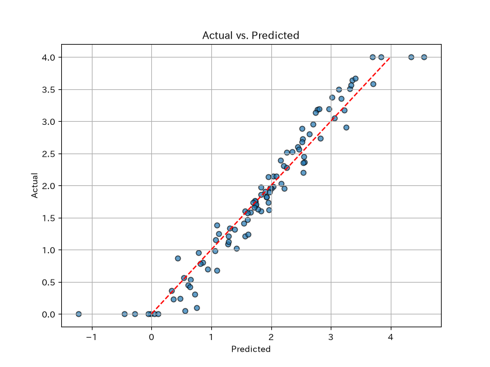
実測値と予測値のカーネル密度プロット (Kernel Density Estimation Plot)を重ねたグラフもベイズモデルなどでよく利用される手法です.
ここでは seaborn の kdeplot を利用してカーネル密度プロットを行ってみます.
#予測結果の作成
pred = result.predict(X)
plt.figure(figsize=(16,8))
sns.kdeplot(pred, label = 'Predicted')
sns.kdeplot(y, label = 'Actual')
plt.title('Actual/Predicted')
plt.xlabel('GPA')
plt.ylabel('Density')
plt.legend()
plt.show()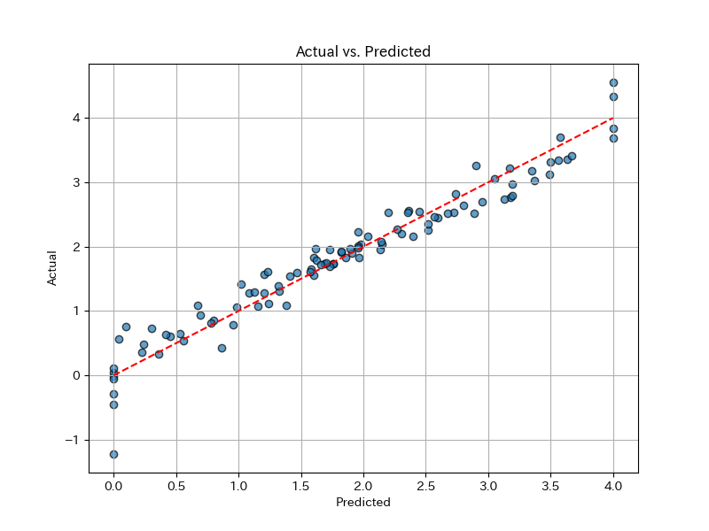
実測値の分布と予測値の分布を見比べることで, 値全体でどの部分が過大/過少に推測されているかモデルの想定する分布がデータの分布と近いかが視覚化されます.
推定に使ったデータでは, 実測値の分布と予測値の分布が近いことが分かります.
その他によく用いられるグラフにPartial Regression PlotやAdded-Variable Plotと呼ばれるグラフがあります.
縦軸に X_i 以外の変数で Y を回帰した際の残差 (他の変数の影響を取り除いた Y の変動)
横軸に X_i 以外の変数で X_i を回帰した際の残差 (他の変数の影響を取り除いた X_i の変動)
がプロットされています.
statsmodels では, そのための plot_partregress_grid というメソッドが準備されています.
from statsmodels.graphics.regressionplots import plot_partregress_grid
fig = plt.figure(figsize=(16,8))
plot_partregress_grid(result, fig=fig)
plt.show()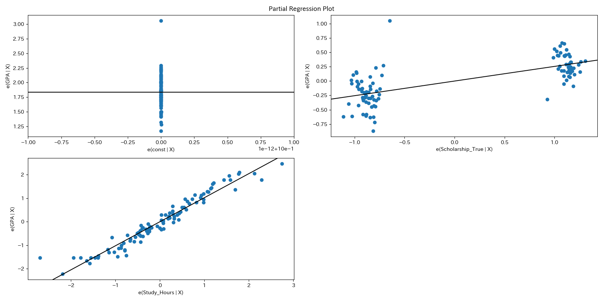
このグラフでは他の変数の影響を取り除いた上での Y と X_i の関係を可視化する手法であり, 回帰直線の傾きが大きいほど他の変数の影響を取り除いた上での X_i の Y への影響力が強いことが分かります.
回帰の評価
決定係数は, 回帰式を求めたデータに式がどれだけ当てはまるかを表します. 回帰式を予測に使うときに知りたいのは, 式を求めるのに使っていない新しいデータに対して, 予測値が実測値からどれだけ外れるかです. GPA のデータを 2 つに分け, 一方で求めた回帰式の予測の誤差をもう一方で測ります.
訓練データとテストデータ
回帰式は, 手元のデータの残差の二乗和が最も小さくなるように係数を決めています. そのため, 式を求めたのと同じデータで誤差を測ると, そのデータにたまたま含まれていたばらつきにまで式を合わせた分だけ, 誤差は小さく出ます. 説明変数を増やすと, 目的変数と関係のない変数であっても, 手元のデータでの誤差は小さくなるか変わらないかのどちらかです. 式全体の評価指標で, 決定係数が説明変数の数とともに 1 に近づくので自由度調整済み決定係数を使う, と述べたのも同じ理由です.
そこで, データを 2 つに分けます. 回帰式を求めるのに使う部分を訓練データ, 求めた式の予測の良さを測るために取っておく部分をテストデータといいます. テストデータでの誤差は, 結果がまだ分からない新しいデータに式を使ったときの誤差の見積もりになります. 訓練データでは誤差が小さいのに, テストデータでは誤差が大きい状態を過学習といいます. 第6章で分類のモデルを評価するときにも, 同じ分け方を使います.
残差と平均二乗誤差
データ i の実測値を y_i, 回帰式による予測値を \hat{y}_i とすると, その差 y_i - \hat{y}_i が残差です (回帰係数の検定の回帰残差と同じものです). 残差の二乗の平均を平均二乗誤差 (Mean Squared Error, MSE) といいます.
\mathrm{MSE} = \frac{1}{n}\sum_{i=1}^{n} (y_i - \hat{y}_i)^2
残差を二乗するのは, 正の残差と負の残差が打ち消し合わないようにするためで, 最小二乗法で残差の二乗和を使うのと同じ理由です. MSE は 0 以上の値をとり, 予測が実測値に近いほど小さくなり, すべての予測値が実測値と一致すれば 0 になります. 分子の残差の二乗和は, 有意 Fの説明に出てきた残差変動と同じ量です. MSE はそれをデータ数 n で割った平均で, 推定値の標準誤差を求めるときに n-2 で割ったのとは割る数が違います.
4 人の学生について, 実測の GPA と回帰式による予測値が次のようになったとします.
| 学生 | 実測値 y_i | 予測値 \hat{y}_i | 残差 y_i - \hat{y}_i | 残差の二乗 |
|---|---|---|---|---|
| 1 | 3.0 | 2.7 | 0.3 | 0.09 |
| 2 | 2.0 | 2.5 | -0.5 | 0.25 |
| 3 | 1.5 | 1.4 | 0.1 | 0.01 |
| 4 | 3.5 | 3.4 | 0.1 | 0.01 |
MSE は残差の二乗の平均なので,
\mathrm{MSE} = \frac{0.09 + 0.25 + 0.01 + 0.01}{4} = \frac{0.36}{4} = 0.09
です. 二乗するので, 大きく外れた予測ほど MSE への寄与が大きくなります. この例では, 学生 2 の 1 人分 (0.25) が残差の二乗和 0.36 の約 7 割を占めています.
MSE の単位は, 目的変数の単位の二乗 (この例では GPA の二乗) です. 平方根をとって目的変数と同じ単位に戻したものを平方根平均二乗誤差 (Root Mean Squared Error, RMSE) といいます.
\mathrm{RMSE} = \sqrt{\mathrm{MSE}} = \sqrt{0.09} = 0.3
RMSE が 0.3 なので, この回帰式の予測は GPA でおよそ 0.3 程度外れる, と読めます.
決定係数 R^2 も残差の二乗和から計算しますが, 目的変数の全変動で割る点が違います.
R^2 = 1 - \frac{\sum_{i=1}^{n} (y_i - \hat{y}_i)^2}{\sum_{i=1}^{n} (y_i - \bar{y})^2}
R^2 は単位を持たない比で, 目的変数のばらつきのうち回帰式で説明できた割合を表します. MSE と RMSE は誤差の大きさそのもので, 予測が平均してどれだけ外れるかを目的変数の単位で表します. 同じデータで同じ目的変数を予測するモデル同士なら, MSE が小さいほど R^2 は大きくなるので, どちらで比べても順位は変わりません. 一方, 目的変数の単位や散らばりが違うデータの間では MSE を比べられないので, R^2 を使います. どちらの指標も, テストデータで計算すれば新しいデータへの当てはまりを表します.
この節に対応する演習は, 章末のExercise DSP5-3です.
scikit-learn による MSE の計算
探索が目的の場合で選んだ, Scholarship_True と Study_Hours を説明変数とするモデルを評価します. 候補の変数は 100 人全員のデータを見て決めているので, ここで測るのは, 変数を決めた後の回帰式の予測の誤差です. 変数の選び方まで含めて評価するときは, 変数を選ぶ前にテストデータを取り分けておきます. statsmodels の代わりに, 予測によく使われる scikit-learn の LinearRegression を使います. 係数は同じ最小二乗法で求まり, .fit() で訓練データから係数を求め, .predict() で予測値を計算します. RMSE を GPA の単位で読めるように, CSV を読み直し, 標準化をせずに元の単位のまま使います.
import numpy as np
import pandas as pd
import matplotlib.pyplot as plt
import matplotlib_fontja
from sklearn.model_selection import train_test_split
from sklearn.linear_model import LinearRegression
from sklearn.metrics import mean_squared_error, r2_score
# 標準化はせず, 元の単位のまま使う
df = pd.read_csv('multiple_regression.csv')
df = pd.get_dummies(df, columns=['Scholarship'], dtype='int')
X = df[['Scholarship_True', 'Study_Hours']]
y = df['GPA']
# 7割を訓練データ, 3割をテストデータにする
X_train, X_test, y_train, y_test = train_test_split(
X, y, test_size=0.3, random_state=0)
print(len(X_train), len(X_test))
# 訓練データだけで回帰式を求める
model = LinearRegression()
model.fit(X_train, y_train)
print(f'切片: {model.intercept_:.3f}')
print(f'係数: {model.coef_.round(3)}')
# 訓練データとテストデータの予測値
pred_train = model.predict(X_train)
pred_test = model.predict(X_test)
mse_train = mean_squared_error(y_train, pred_train)
mse_test = mean_squared_error(y_test, pred_test)
print(f'MSE 訓練: {mse_train:.3f} テスト: {mse_test:.3f}')
print(f'RMSE 訓練: {np.sqrt(mse_train):.3f} テスト: {np.sqrt(mse_test):.3f}')
print(f'R2 訓練: {r2_score(y_train, pred_train):.3f} テスト: {r2_score(y_test, pred_test):.3f}')
"""
70 30
切片: -1.007
係数: [0.509 0.267]
MSE 訓練: 0.070 テスト: 0.067
RMSE 訓練: 0.265 テスト: 0.258
R2 訓練: 0.940 テスト: 0.950
"""train_test_split はデータをランダムに分ける関数で, test_size=0.3 で 100 人のうち 3 割の 30 人をテストデータにしています. random_state で乱数を固定しておくと, 何度実行しても同じ分け方になります. mean_squared_error は MSE を返すので, RMSE は np.sqrt で平方根をとって求めます.
元の単位のままなので, 係数はそのまま読めます. 勉強時間が 1 時間増えると GPA の予測値は約 0.27 上がり, 奨学生の予測値は非奨学生より約 0.51 高くなります.
テストデータの MSE は 0.067 (RMSE 0.258) で, この回帰式で新しい学生の GPA を予測すると, GPA でおよそ 0.26 程度外れると見積もれます. 訓練データの MSE (0.070) とほぼ同じで, 訓練データにだけ当てはまる過学習は起きていません. テストデータの方がわずかに小さいのは, どの 30 人がテストデータに入ったかによる偶然です. テストデータでの誤差が訓練データより大きくなるとは限らず, 評価で見るのは差の向きではなく, 新しいデータでの誤差の大きさと, 訓練データとの間に大きな開きがないかです. テストデータの R^2 も 0.950 で, 式全体の評価指標の基準 (0.8 以上でかなり正確) を満たしています.
予測値と実測値の散布図に, 訓練データとテストデータを分けて描きます. 上のコードの続きで実行します.
plt.figure(figsize=(6, 6))
plt.scatter(pred_train, y_train, alpha=0.5, label='訓練データ')
plt.scatter(pred_test, y_test, marker='^', color='tab:orange', edgecolors='k', label='テストデータ')
lims = [y.min() - 0.3, y.max() + 0.3]
plt.plot(lims, lims, color='red', linestyle='--', label='予測値 = 実測値') # 45度線
plt.xlabel('予測値 (GPA)')
plt.ylabel('実測値 (GPA)')
plt.title('予測値と実測値')
plt.legend()
plt.grid()
plt.show()
plt.close()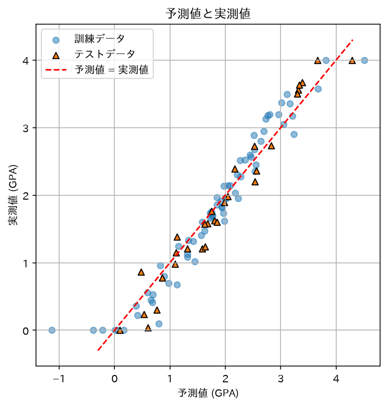
横軸が予測値, 縦軸が実測値で, 予測が実測値と一致した点は赤い点線 (45 度線) の上に乗ります. テストデータの点 (三角) も, 訓練データの点と同じように 45 度線のまわりに集まっていて, 散らばりの幅にも違いは見えません. 一方, 左下では, 実測値が 0 の学生に対する予測値が 0 を下回っています (最も外れた学生では -1.1). GPA は 0 から 4 の範囲に収まる値ですが, 線形回帰の予測値には上限も下限もないためです. MSE は大きく外れた予測を強く数えるので, この範囲の端の学生が誤差を押し上げています.
この節に対応する演習は, 章末のExercise DSP5-2です.
説明変数の組み合わせをテスト MSE で比べる (発展)
予測が目的の場合では, 回帰式を求めるのに使っていないデータでの誤差で変数の組み合わせを比べると述べました. その方法の 1 つとして, 候補の説明変数から作れる組み合わせごとに回帰式を求め, テストデータの MSE で比べる方法があります. 候補が Scholarship_True, Study_Hours, Sports_hours, Part_time_Work の 4 つなら, 組み合わせは 15 通りです.
import itertools
import pandas as pd
from sklearn.model_selection import train_test_split
from sklearn.linear_model import LinearRegression
from sklearn.metrics import mean_squared_error
df = pd.read_csv('multiple_regression.csv')
df = pd.get_dummies(df, columns=['Scholarship'], dtype='int')
candidates = ['Scholarship_True', 'Study_Hours', 'Sports_hours', 'Part_time_Work']
train, test = train_test_split(df, test_size=0.3, random_state=0)
rows = []
for k in range(1, len(candidates) + 1):
for cols in itertools.combinations(candidates, k):
cols = list(cols)
model = LinearRegression().fit(train[cols], train['GPA'])
rows.append({'説明変数': ' + '.join(cols),
'訓練 MSE': mean_squared_error(train['GPA'], model.predict(train[cols])),
'テスト MSE': mean_squared_error(test['GPA'], model.predict(test[cols]))})
result = pd.DataFrame(rows).sort_values('テスト MSE')
print(result.head(5).round(3).to_string(index=False))
"""
説明変数 訓練 MSE テスト MSE
Scholarship_True + Study_Hours + Part_time_Work 0.046 0.034
Scholarship_True + Study_Hours + Sports_hours + Part_time_Work 0.046 0.034
Scholarship_True + Study_Hours 0.070 0.067
Scholarship_True + Study_Hours + Sports_hours 0.069 0.069
Study_Hours + Part_time_Work 0.108 0.117
"""itertools.combinations(candidates, k) は, 候補から k 個を選ぶ組み合わせを順に返します. データの分け方は本文と同じなので, 3 行目のモデルのテスト MSE (0.067) は 回帰の評価の値と一致します.
テスト MSE が最も小さいのは Part_time_Work を含むモデル (0.034) で, 本文で選んだモデルの約半分です. 多重共線性 (弱い多重共線性)の節では, Study_Hours との相関 (-0.77) を理由に Part_time_Work を除外しました. 2 つの結論が違うのは, 目的が違うためです. 多重共線性は個々の回帰係数の推定を不安定にするので, 係数を解釈して何が GPA に影響するかを論じるときに問題になります. 予測値そのものは, 相関の強い説明変数を含んでいても安定していることが多く, 予測が目的ならテスト MSE が判断の基準になります.
ただし, テスト MSE が最小の組み合わせを選ぶと, テストデータを変数の選択に使ったことになります. 選んだモデルのテスト MSE は, 多くの候補の中から最も良かったものなので, 新しいデータでの誤差より小さめに出ます. 変数の選択まで行うときは, 訓練データをさらに分けた検証データで組み合わせを選び, テストデータは選んだモデルの最後の評価に 1 回だけ使います.
目的変数と無関係な変数を P 値で選ぶシミュレーション (発展)
モデル選択の 1〜3 の手順で, 目的変数と無関係な変数から選ぶと何が起きるかを, シミュレーションで確かめます. 100 人分のデータに 50 個の説明変数の候補を作り, 目的変数も含めて, すべて互いに無関係な正規分布の乱数にします. 本当の回帰係数はすべて 0 なので, 正しい結論は「どの変数も目的変数と関係しない」です. データの大きさは Freedman (1983) の設定にそろえています. ただし変数の選び方は違います. Freedman は, 1 回目の推定で緩い基準を満たした変数をまとめて残し, 2 回目の推定で検定しています.
import numpy as np
import pandas as pd
import statsmodels.api as sm
rng = np.random.default_rng(0)
n, k = 100, 50
names = [f'x{j}' for j in range(k)]
def backward_eliminate(X, y):
"""P 値が 0.05 以上の変数のうち, 最も大きいものを 1 つずつ除く."""
selected = list(X.columns)
while selected:
fit = sm.OLS(y, sm.add_constant(X[selected])).fit()
pvalues = fit.pvalues.drop('const')
if pvalues.max() < 0.05:
return selected, fit
selected.remove(pvalues.idxmax())
return selected, None
# 1 回分: y は x のどれとも無関係に作る
X = pd.DataFrame(rng.normal(size=(n, k)), columns=names)
y = pd.Series(rng.normal(size=n))
selected, fit = backward_eliminate(X, y)
print('残った変数:', selected)
if fit is not None:
print(fit.pvalues.drop('const').round(3).to_string())
print(f'決定係数: {fit.rsquared:.3f} 有意 F: {fit.f_pvalue:.4f}')
# 同じことを 200 回繰り返す
trials = 200
counts = []
n_selected = 0
n_confirmed = 0
for _ in range(trials):
X = pd.DataFrame(rng.normal(size=(n, k)), columns=names)
y = pd.Series(rng.normal(size=n))
selected, fit = backward_eliminate(X, y)
counts.append(len(selected))
if selected:
# 同じ作り方で新しいデータを作り, 残った変数で推定し直す
X_new = pd.DataFrame(rng.normal(size=(n, k)), columns=names)
y_new = pd.Series(rng.normal(size=n))
fit_new = sm.OLS(y_new, sm.add_constant(X_new[selected])).fit()
n_selected += len(selected)
n_confirmed += (fit_new.pvalues.drop('const') < 0.05).sum()
counts = np.array(counts)
print(f'1 つ以上の変数が残った割合: {(counts > 0).mean():.2f}')
print(f'残った変数の数の平均: {counts.mean():.1f}')
rate = n_confirmed / n_selected
print(f'新しいデータでも有意だった割合: {rate:.3f} ({n_confirmed}/{n_selected})')
"""
残った変数: ['x10', 'x32', 'x49']
x10 0.000
x32 0.011
x49 0.033
決定係数: 0.179 有意 F: 0.0003
1 つ以上の変数が残った割合: 0.92
残った変数の数の平均: 3.9
新しいデータでも有意だった割合: 0.045 (35/772)
"""backward_eliminate は, 探索が目的の場合と同じく, P 値が最も大きい変数を 1 つずつ除き, 残った変数のリストと, 最後に推定したモデルを返す関数です. 変数がすべて除かれたときは, モデルの代わりに None を返します. 実行には, 環境によって 10 秒から数十秒かかります.
1 回目のデータでは x10, x32, x49 の 3 つが残り, 3 つとも P 値が 0.05 未満で, 式全体の有意 F も 0.0003 です. このモデルの検定の結果はどれも「関係がある」ことを示していますが, データの作り方から, この 3 つの変数は y と無関係です. 200 回繰り返すと, 92% の回で 1 つ以上の変数が有意なまま残り, 残った変数の数は平均 3.9 個でした.
200 回で残った変数は延べ 772 個です. 残った変数を, 同じ作り方で作った新しいデータで推定し直すと, P 値が 0.05 未満になったのは, そのうち 35 個 (4.5%) でした. 92% は「1 つ以上の変数が残った回」の割合で, 4.5% は「残った変数 1 個ずつ」についての割合なので, 2 つの数は分母が違います. 目的変数と関係の無い変数の P 値が 0.05 未満になる確率は 5% なので, 選ばれた変数も, 新しいデータでは他の無関係な変数と同じ割合でしか有意になりません. 選んだデータで計算した P 値が小さかったのは, 変数とデータの関係によるものではなく, 選び方によるものです. 別のデータで確かめる手順 (探索が目的の場合) では, 確認用のデータで計算する P 値が選び方の影響を受けないので, この偏りが入りません.
モデル選択の考え方の分野ごとの経緯 (発展)
モデルの選び方と, 選んだモデルの結果の読み方の問題は, 統計学を使う多くの分野で別々に指摘され, 分野ごとに違う名前と対処が発達してきました. 同じデータで変数を選んでから検定すると P 値が小さく出やすくなる問題のほかに, 調整のために入れた変数の係数の読み方 (疫学) や, 新しいデータでの予測の誤差の見積もり (機械学習) も, 同じ表に並べます. 文献を探すときは, 分野ごとの名前で探す必要があります.
| 分野 | 問題の呼び方 | 主な対処 | 文献 |
|---|---|---|---|
| 統計学 | 選択後の推論 (post-selection inference), 回帰式のふるい分け (screening) | データの分割, 選んだことを考慮した P 値と信頼区間の補正, 選ばれる変数の安定性の確認 | Freedman (1983), Leeb & Pötscher (2005), Harrell (2015), Heinze et al. (2018) |
| 計量経済学 | 特定化の探索 (specification search) | 変数の選び方を変えたときに結果がどれだけ変わるかの報告, 一般的なモデルから検定で絞り込む手順 (general-to-specific) の体系化 | Leamer (1983), Hendry & Doornik (2014) |
| 疫学 | 調整する変数の選択, Table 2 の誤り (Table 2 fallacy) | 因果の関係についての仮定から調整する変数を決める. 各係数を一律にその変数の効果として読まない | Westreich & Greenland (2013), Hernán & Robins (2020) |
| 機械学習 | 過学習 | 訓練データとテストデータの分割, 交差検証, 正則化 | James et al. (2021) |
| 心理学 | 研究者の自由度 (researcher degrees of freedom), garden of forking paths | 実施した分析とデータの集め方の判断をすべて開示する, 事前登録 (データを集める前に, 分析の手順を登録して公開する) | Simmons et al. (2011), Gelman & Loken (2014) |
疫学の Table 2 の誤りは, 1 つの説明変数の効果を推定するために作ったモデルの, 調整のために入れた他の変数の係数まで, それぞれの効果として読んでしまうことを指します. 論文の 2 番目の表に回帰の結果が載ることが多いので, この名前が付いています (Westreich & Greenland, 2013). 心理学の garden of forking paths は, データを見ながら分析の分かれ道 (どの変数を入れるか, どのデータを除くか) を選ぶと, 実際に計算した検定が 1 つだけでも, 多くの分析を試したのと同じ問題が起こることを指します. データが違えば別の分かれ道を選んでいた可能性があるためです (Gelman & Loken, 2014).
分野ごとの対処は, 次の 3 つの型に分けられます.
- データを見る前に決める: 事前登録, 因果の関係についての仮定から変数を決める.
- 選ぶデータと確かめるデータを分ける: 予測の誤差を確かめるなら訓練データとテストデータ, 交差検証. 係数を確かめるなら探索用と確認用のデータ.
- 選んだことを推論や報告に反映させる: 選択後の推論, 選び方を変えたときの結果の変化の報告.
P 値の使い方については, アメリカ統計学会が 2016 年に声明を出しています (Wasserstein & Lazar, 2016). 声明は, P 値が一定の値を下回るかどうかだけで科学的な結論を出すべきではないことや, 正しい推論には分析の過程をすべて報告する必要があることなどを述べています.
一般化線形モデル: ロジスティック回帰 (発展)
scikit-learn による MSE の計算では, 線形回帰の予測値が GPA の下限の 0 を下回りました. 目的変数が「単位を取れたか (1) 取れなかったか (0)」のような 2 値のときは, 同じことがもっと目立ちます. 2 値の目的変数について知りたいのは, 説明変数の値ごとに 1 になる確率です. 確率は 0 から 1 の範囲に収まる値ですが, 線形回帰の予測値には上限も下限もありません. 予測値が必ず 0 から 1 に収まるように回帰式を作り直したものがロジスティック回帰 (Logistic Regression) で, 線形回帰を含む一般化線形モデル (Generalized Linear Model, GLM) の 1 つです.
例題のデータ: 単位の取得と時間の使い方
こちらのデータは, 学生 200 人について, 1 週間の勉強時間とアルバイト時間, ある科目の単位を取得したかどうかを記録したものです (練習用に作成した架空のデータです).
- 目的変数:
Credit(1: 単位を取得した, 0: 取得しなかった) 2 値の質的変数 - 説明変数:
Study_Hours量的変数; 1 週間の平均勉強時間Part_time_Work量的変数; 1 週間の平均バイト時間
まず, 勉強時間だけを説明変数にして, これまでと同じ線形回帰を当てはめます.
import numpy as np
import pandas as pd
import matplotlib.pyplot as plt
import matplotlib_fontja
import statsmodels.api as sm
df = pd.read_csv('credit.csv')
print(df.head())
print(df['Credit'].mean())
# 勉強時間だけを説明変数にして, 線形回帰を当てはめる
X1 = sm.add_constant(df[['Study_Hours']])
ols = sm.OLS(df['Credit'], X1).fit()
pred = ols.predict(X1)
print(ols.params.round(3))
print('0 未満:', (pred < 0).sum(), '1 超:', (pred > 1).sum())
fig, ax = plt.subplots(figsize=(8, 5))
ax.scatter(
df['Study_Hours'], df['Credit'], alpha=0.4, label='実測値 (1: 取得, 0: 未取得)'
)
x_vals = np.linspace(0, 20, 100)
ax.plot(
x_vals,
ols.params['const'] + ols.params['Study_Hours'] * x_vals,
color='red',
linestyle='--',
label='線形回帰の予測値',
)
ax.axhline(0, color='gray', linewidth=0.8)
ax.axhline(1, color='gray', linewidth=0.8)
ax.set_xlabel('1 週間の勉強時間')
ax.set_ylabel('単位の取得')
ax.legend()
ax.grid()
plt.show()
plt.close(fig)
"""
Study_Hours Part_time_Work Credit
0 4.8 8.8 0
1 2.7 0.0 0
2 7.0 8.5 1
3 9.7 12.0 1
4 12.5 19.1 0
0.51
const -0.089
Study_Hours 0.077
dtype: float64
0 未満: 6 1 超: 15
"""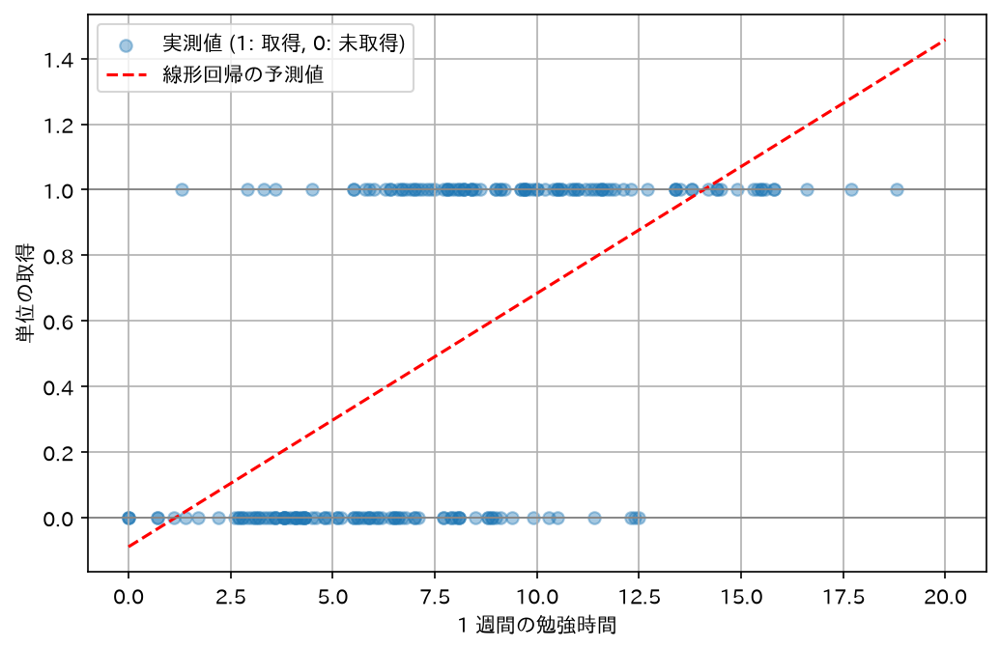
Credit の平均は 0.51 で, 200 人のうち 51% が単位を取得しています. 実測値は縦軸の 0 と 1 の 2 本の線の上にしかありません. 勉強時間の長い学生ほど 1 の線の上に多く, 短い学生ほど 0 の線の上に多くいます. 回帰直線は勉強時間が 1 時間増えるごとに 0.077 ずつ上がり, 勉強時間が 1.2 時間未満の 6 人では 0 を下回り, 14 時間を超える 15 人では 1 を超えます. 予測値を確率として読むと, 200 人のうち 21 人で「確率が負」「確率が 1 を超える」という読めない値になります.
一般化線形モデルの 3 つの要素
一般化線形モデルは, 回帰式を次の 3 つの要素に分けて考えます.
- 確率分布: 目的変数がどの分布に従うと考えるか
- 線形予測子: 説明変数の 1 次式 \eta_i = \beta_0 + \beta_1 x_{1i} + \beta_2 x_{2i} + \cdots
- リンク関数: 目的変数の期待値 E[y_i] を線形予測子 \eta_i に結び付ける関数 g(E[y_i]) = \eta_i
本章の線形回帰とロジスティック回帰は, 線形予測子が共通で, 確率分布とリンク関数が違います.
| 要素 | 線形回帰 | ロジスティック回帰 |
|---|---|---|
| 目的変数 | 量的変数 (GPA) | 2 値 (単位の取得 1/0) |
| 確率分布 | 正規分布 | ベルヌーイ分布 (1 になる確率 p_i) |
| 線形予測子 | \eta_i = \beta_0 + \beta_1 x_{1i} + \beta_2 x_{2i} | 同じ |
| リンク関数 | 恒等関数 E[y_i] = \eta_i | ロジット関数 \log \dfrac{p_i}{1-p_i} = \eta_i |
| statsmodels | sm.OLS(y, X) |
sm.Logit(y, X) |
ベルヌーイ分布は, 確率 p_i で 1, 確率 1-p_i で 0 をとる分布です. 期待値は E[y_i] = 1 \times p_i + 0 \times (1-p_i) = p_i なので, 2 値の目的変数の期待値は 1 になる確率そのものです.
ロジット関数の中の \dfrac{p_i}{1-p_i} をオッズといい, 1 になる確率が 0 になる確率の何倍かを表します. 確率 0.8 ならオッズは 0.8 / 0.2 = 4, 確率 0.5 ならオッズは 1 です. オッズの対数を対数オッズといいます. 確率は 0 から 1 の範囲の値ですが, オッズは 0 から無限大, 対数オッズは負の無限大から正の無限大までの値をとります. 範囲に制限のない対数オッズなら, 上限も下限もない線形予測子と等しいと置けます. ロジスティック回帰は, 対数オッズが説明変数の 1 次式になると考えるモデルです.
\log \frac{p_i}{1-p_i} = \beta_0 + \beta_1 x_{1i} + \beta_2 x_{2i}
この式を p_i について解くと, 次のロジスティック関数になります.
p_i = \frac{1}{1 + \exp\{-(\beta_0 + \beta_1 x_{1i} + \beta_2 x_{2i})\}}
線形予測子がどんな値でも, 右辺は 0 から 1 の間に収まります. 線形予測子が 0 のとき p_i = 0.5 で, 線形予測子が大きくなるほど 1 に, 小さくなるほど 0 に近づく S 字の曲線を描きます.
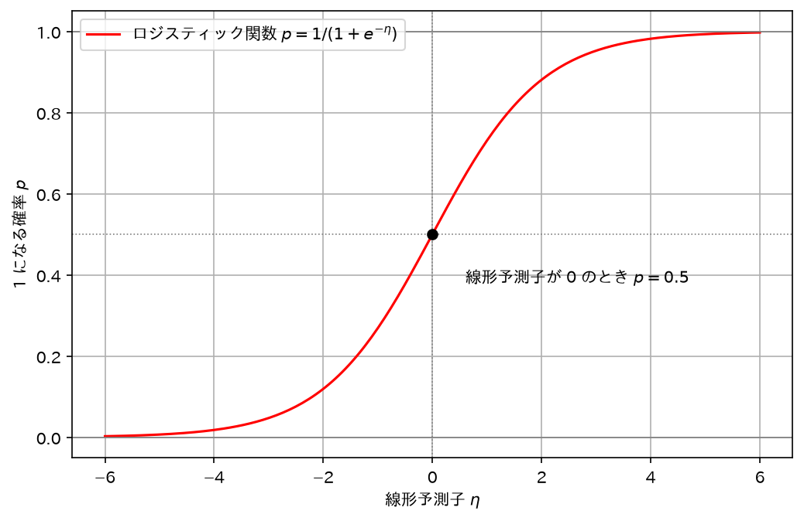
本章の冒頭の分類では, 目的変数が説明変数の線形関数であるものを線形回帰, それ以外を非線形回帰と呼びました. ロジスティック回帰の確率 p_i は説明変数の非線形な関数ですが, リンク関数を通した対数オッズは説明変数の 1 次式です. このように, リンク関数を通すと線形予測子で表せるモデルをまとめて一般化線形モデルと呼びます.
係数の求め方も線形回帰と違います. 実測値が 0 か 1 しかないので, 残差の二乗和を最小にする最小二乗法は使いません. 代わりに, 手元のデータが得られる確率 (尤度) が最も大きくなるように係数を選ぶ最尤法を使います. 尤度と最尤法の考え方は, 第13章の尤度 (Likelihood)と最尤推定で説明しています.
statsmodels によるロジスティック回帰
勉強時間とアルバイト時間の 2 つを説明変数にして, sm.Logit でロジスティック回帰を行います. 使い方は sm.OLS と同じで, 定数項を sm.add_constant で足します.
上のコードの続きで実行します.
X = sm.add_constant(df[['Study_Hours', 'Part_time_Work']])
y = df['Credit']
result = sm.Logit(y, X).fit()
print(result.summary())
# 係数を指数関数に通すとオッズ比になる
print(np.exp(result.params).round(3))
"""
Optimization terminated successfully.
Current function value: 0.408695
Iterations 7
Logit Regression Results
==============================================================================
Dep. Variable: Credit No. Observations: 200
Model: Logit Df Residuals: 197
Method: MLE Df Model: 2
Date: Fri, 20 Nov 2026 Pseudo R-squ.: 0.4102
Time: 11:25:27 Log-Likelihood: -81.739
converged: True LL-Null: -138.59
Covariance Type: nonrobust LLR p-value: 2.042e-25
==================================================================================
coef std err z P>|z| [0.025 0.975]
----------------------------------------------------------------------------------
const -2.1662 0.618 -3.503 0.000 -3.378 -0.954
Study_Hours 0.6028 0.088 6.875 0.000 0.431 0.775
Part_time_Work -0.1967 0.043 -4.575 0.000 -0.281 -0.112
==================================================================================
const 0.115
Study_Hours 1.827
Part_time_Work 0.821
dtype: float64
"""Method: MLE は, 係数を最尤法 (Maximum Likelihood Estimation) で求めたことを表します. 最尤法は係数を少しずつ動かして尤度が最大になる値を探すので, 最初の行に探索が終わったこと (Optimization terminated successfully) と繰り返しの回数が出ます.
係数の表の読み方は回帰係数 (P 値, 区間推定値)とほぼ同じです. t の代わりに z が出ますが, 係数が 0 かどうかを検定した結果で, P>|z| が 0.05 未満なら有意と読みます. 勉強時間の係数は正, アルバイト時間の係数は負で, どちらも有意です.
ただし, 係数は確率でなく対数オッズへの影響です. 勉強時間の係数 0.603 は, アルバイト時間が同じなら, 勉強時間が 1 時間増えると対数オッズが 0.603 増えることを表します. 対数のままでは読みにくいので, 係数を指数関数に通した値 \exp(\beta) を使います. これは説明変数が 1 増えたときにオッズが何倍になるかを表し, オッズ比といいます. 勉強時間のオッズ比は 1.827 なので, 勉強時間が 1 時間増えると単位を取得するオッズは約 1.83 倍になります. アルバイト時間のオッズ比は 0.821 なので, アルバイト時間が 1 時間増えるとオッズは約 0.82 倍 (約 18% 減) になります. オッズ比が 1 より大きい説明変数は 1 になる確率を上げ, 1 より小さい説明変数は下げます.
確率そのものの変化は, 説明変数の値によって違います. ロジスティック関数は S 字の曲線なので, 確率が 0.5 付近では大きく動き, 0 や 1 の近くではほとんど動きません. そのため「1 時間で確率が何ポイント上がる」とは, 1 つの数で言えません.
Pseudo R-squ. (疑似決定係数) は, 説明変数を入れたモデルの対数尤度 (Log-Likelihood) が, 定数項だけのモデルの対数尤度 (LL-Null) からどれだけ改善したかを表す指標です. 0 から 1 の値をとりますが, 線形回帰の決定係数 R^2 とは計算の仕方が違うので, 式全体の評価指標の基準 (0.8 以上でかなり正確) は当てはまりません.
一般化線形モデルの 3 つの要素を指定して sm.GLM(y, X, family=sm.families.Binomial()) と書いても, 同じ係数が得られます. family に指定した二項分布 (ベルヌーイ分布は試行回数が 1 回の二項分布です) の既定のリンク関数がロジット関数だからです.
予測確率の曲線と分類
勉強時間を 0 時間から 20 時間まで変え, アルバイト時間は平均 (11.85 時間) に固定したときの予測確率を描きます. result.predict() は, 線形予測子をロジスティック関数に通した確率を返します. 上のコードの続きで実行します.
# 勉強時間を変え, アルバイト時間は平均に固定したときの予測確率
x_vals = np.linspace(0, 20, 100)
grid = pd.DataFrame(
{
'const': 1.0,
'Study_Hours': x_vals,
'Part_time_Work': df['Part_time_Work'].mean(),
}
)
prob = result.predict(grid)
fig, ax = plt.subplots(figsize=(8, 5))
ax.scatter(
df['Study_Hours'], df['Credit'], alpha=0.4, label='実測値 (1: 取得, 0: 未取得)'
)
ax.plot(x_vals, prob, color='red', label='予測確率 (アルバイト時間は平均)')
ax.set_xlabel('1 週間の勉強時間')
ax.set_ylabel('単位を取得する確率')
ax.legend()
ax.grid()
plt.show()
plt.close(fig)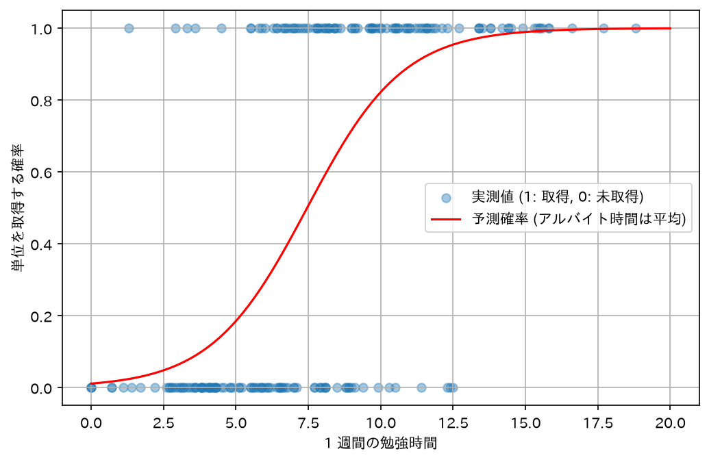
予測確率は S 字の曲線になり, どの勉強時間でも 0 から 1 の範囲に収まります. アルバイト時間が平均の学生では, 勉強時間が約 7.5 時間のときに確率が 0.5 になります. 勉強時間が 5 時間なら確率は 0.185, 10 時間なら 0.822 で, 確率が 0.5 に近い 5 時間から 10 時間の間で大きく変わります.
予測確率がしきい値 (よく使うのは 0.5) 以上なら 1, 未満なら 0 と予測すれば, ロジスティック回帰を分類に使えます. 上のコードの続きで実行します.
# 予測確率が 0.5 以上なら「取得」と分類する
pred_class = (result.predict(X) >= 0.5).astype(int)
print('正解率:', (pred_class == y).mean())
print(pd.crosstab(y, pred_class, rownames=['実測'], colnames=['予測']))
"""
正解率: 0.82
予測 0 1
実測
0 80 18
1 18 84
"""200 人のうち 164 人 (82%) の単位の取得を正しく分類できています. ここでは係数を求めたのと同じデータで正解率を測っているので, 新しい学生に対する正解率より高めに出ます (訓練データとテストデータと同じ理由です). 実測と予測の組み合わせを数えたこの表 (混同行列) と, 分類の評価の指標は第6章の分類の評価で扱います. 第11章で手書き数字の分類器を比べるときに使う scikit-learn の LogisticRegression は, 同じ考え方を 3 つ以上のクラスへ広げたものです (既定で係数が大きくなりすぎないように抑える正則化も入るので, 係数は sm.Logit と一致しません).
実データでの事例
本章の事例はダミーデータでしたが, 実際の研究データで回帰分析を行うには, データの取得・整形・結合という前処理が分析そのもの以上に重要になります. 国の開示システム EDINET から上場企業の財務データを取得し, 株価・業種と結合して本章の重回帰分析 (産業ダミー・年度ダミーによる統制を含む) を適用するまでの一連の流れを, 特別講義 (データサイエンス) の資料 補足A EDINET API による財務データの取得と回帰分析で解説しています. この補足資料は特別講義の受講生の研究 (ESGスコアと財務指標の重回帰分析, 論文化済み) のコードを元にしており, 変数選択の注意点 (p 値を見てからの変数選択の問題) も扱っているので, 研究で回帰分析を使う人は一読を推奨します.
さらに学ぶための文献
モデル選択の節で扱わなかった内容を学ぶための文献です.
- 佐和 (1979/2020): 回帰分析の理論を和文で扱う教科書です. 第7章で, 説明変数を選ぶための基準を扱っています.
- James et al. (2021): 予測を目的とした回帰と分類の入門書です. 第5章で交差検証, 第6章で変数選択と正則化を扱っています. 第 1 版には邦訳があります.
- Harrell (2015): 回帰モデルを組み立てる手順の専門書です. 第4章で, ステップワイズ法の問題点を挙げています.
- Heinze et al. (2018): 変数選択の方法を総説し, 実際の分析での推奨をまとめた論文です.
- Efron & Hastie (2016): 現代の統計的推論の教科書です. 第20章で, 変数を選んだ後の推論 (選択後の推論) を扱っています. 著者の web サイトで無料で公開されています.
- 小西 & 北川 (2004): AIC などの情報量規準の考え方と導出を, 和文で扱う教科書です.
- Burnham & Anderson (2002): AIC による複数のモデルの比較と, モデルを重み付けて使う方法の専門書です.
- Gelman et al. (2020): 回帰分析の教科書です. 本章の発展のシミュレーションのように, データを作って推定の性質を確かめる方法を多く使い, 係数の解釈と予測の評価の両方を扱っています.
- Hernán & Robins (2020): 因果推論の教科書です. 調整する変数を, 因果の関係についての仮定から選ぶ考え方を扱っています. 著者の web サイトで無料で公開されています.
- Angrist & Pischke (2009): 計量経済学の立場から, 回帰を因果効果の推定に使う方法を扱う教科書です. 調整に入れてはいけない変数 (bad control) を論じています. 邦訳があります.
参考文献
演習
Exercise DSP5-1
メキシコを含めた出生率の単回帰分析
対応する節: 単回帰分析
単回帰分析の手順で, 内閣府の計算で除外されていたメキシコを加えた 22 か国のデータで単回帰分析を行い, 結果を解釈してください.
提出ファイル名: dsp5-1.py
回答例
import pandas as pd
import statsmodels.api as sm
df_f = pd.read_csv("fertility_rates.csv")
df_t = pd.read_csv("time_used.csv")
unpaid_and_care = df_t[["Unpaid", "Care"]].sum(axis=1)
total_work = df_t[["Paid", "Unpaid", "Care"]].sum(axis=1)
df_t["r"] = unpaid_and_care / total_work
df_f["Country"] = df_f["Country"].replace({"Türkiye": "Turkey"})
joined = df_f.merge(
df_t[["Country", "r"]],
on="Country",
how="outer",
validate="one_to_one",
indicator=True,
)
df_f = joined.loc[joined["_merge"] == "both", ["Country", "Fertility", "r"]]
df_f = df_f.set_index("Country").dropna()
df_f["r"] = df_f["r"] * 100
print(len(df_f))
X = sm.add_constant(df_f[["r"]])
y = df_f["Fertility"]
result = sm.OLS(y, X).fit()
print(result.summary())22
OLS Regression Results
==============================================================================
Dep. Variable: Fertility R-squared: 0.040
Model: OLS Adj. R-squared: -0.008
Method: Least Squares F-statistic: 0.8231
Date: Fri, 20 Nov 2026 Prob (F-statistic): 0.375
Time: 23:02:10 Log-Likelihood: 1.8890
No. Observations: 22 AIC: 0.2221
Df Residuals: 20 BIC: 2.404
Df Model: 1
Covariance Type: nonrobust
==============================================================================
coef std err t P>|t| [0.025 0.975]
------------------------------------------------------------------------------
const 1.3729 0.201 6.830 0.000 0.954 1.792
r 0.0052 0.006 0.907 0.375 -0.007 0.017
==============================================================================
Omnibus: 0.918 Durbin-Watson: 1.844
Prob(Omnibus): 0.632 Jarque-Bera (JB): 0.288
Skew: -0.275 Prob(JB): 0.866
Kurtosis: 3.114 Cond. No. 143.
==============================================================================
Notes:
[1] Standard Errors assume that the covariance matrix of the errors is correctly specified.メキシコを加えると, 傾きは 0.00931 から 0.00517 へと 0 に近づきます. P 値は 0.375 で, 95% 信頼区間 (-0.0067 から 0.0171) は 0 をまたぎます. 本文の 21 か国と同じく, 傾きと式全体の F 検定は 5% 水準で有意ではありません. 自由度調整済み決定係数は -0.008 です.
国名を揃えずトルコが落ちた 20 か国では, 傾きは有意でした (P 値は約 0.016). どの国を分析に含めるかによって, 傾きの推定値と検定の結果が変わります.
Exercise DSP5-2
運動時間を加えたモデルのテスト MSE
対応する節: 回帰の評価
回帰の評価のモデル (説明変数は Scholarship_True と Study_Hours) に Sports_hours を加えたモデルを作ってください. 本文と同じ分け方 (test_size=0.3, random_state=0) で, Sports_hours を含むモデルと含まないモデルの訓練データとテストデータの MSE を比べ, 違いを説明してください. このテストデータの MSE を見て Sports_hours を加えるかを決めると, 選んだモデルのテスト MSE が新しいデータでの誤差より小さめに出やすい理由も説明してください.
提出ファイル名: dsp5-2.py
回答例
import pandas as pd
from sklearn.model_selection import train_test_split
from sklearn.linear_model import LinearRegression
from sklearn.metrics import mean_squared_error
df = pd.read_csv('multiple_regression.csv')
df = pd.get_dummies(df, columns=['Scholarship'], dtype='int')
y = df['GPA']
models = {
'A: 奨学生 + 勉強時間': ['Scholarship_True', 'Study_Hours'],
'B: 奨学生 + 勉強時間 + 運動時間': ['Scholarship_True', 'Study_Hours', 'Sports_hours'],
}
for name, cols in models.items():
X_train, X_test, y_train, y_test = train_test_split(
df[cols], y, test_size=0.3, random_state=0)
model = LinearRegression().fit(X_train, y_train)
mse_train = mean_squared_error(y_train, model.predict(X_train))
mse_test = mean_squared_error(y_test, model.predict(X_test))
print(f'{name} 訓練 MSE: {mse_train:.4f} テスト MSE: {mse_test:.4f}')A: 奨学生 + 勉強時間 訓練 MSE: 0.0701 テスト MSE: 0.0666
B: 奨学生 + 勉強時間 + 運動時間 訓練 MSE: 0.0690 テスト MSE: 0.0694Sports_hours を加えたモデル B は, 訓練データの MSE が 0.0701 から 0.0690 に下がり, テストデータの MSE は 0.0666 から 0.0694 に上がります. 最小二乗法では, 説明変数を加えると訓練データの MSE は下がるか同じ値になります. 今回の分け方では, 運動時間を加えるとテストデータでの誤差がわずかに増えました.
テスト MSE が小さい方を選ぶと, そのテストデータでたまたま誤差が小さく出たモデルも選ばれやすくなります. 選択に使ったテスト MSE をそのまま評価に使うと, 新しいデータでの誤差を過小に見積もりがちです. 変数を選ぶときは, 訓練データの一部を検証データとして使うか, 訓練データ内で交差検証を行います. テストデータは, 選んだモデルの最後の評価に 1 回だけ使います. 選択と評価に使うデータの分け方は, 説明変数の組み合わせをテスト MSE で比べるで説明しています.
Exercise DSP5-3
MSE と RMSE の手計算
対応する節: 残差と平均二乗誤差
3 人の学生について, GPA の実測値が 2.0, 3.5, 1.0, 回帰式による予測値が 2.4, 3.3, 1.2 でした. 残差, MSE, RMSE を手で計算し, RMSE の値を GPA の単位で説明してください (提出ファイルは不要です).
回答例
残差は 2.0 - 2.4 = -0.4, 3.5 - 3.3 = 0.2, 1.0 - 1.2 = -0.2 で, その二乗は 0.16, 0.04, 0.04 です.
\mathrm{MSE} = \frac{0.16 + 0.04 + 0.04}{3} = \frac{0.24}{3} = 0.08, \quad \mathrm{RMSE} = \sqrt{0.08} \approx 0.283
RMSE が約 0.28 なので, この回帰式の予測は GPA でおよそ 0.28 程度外れています.